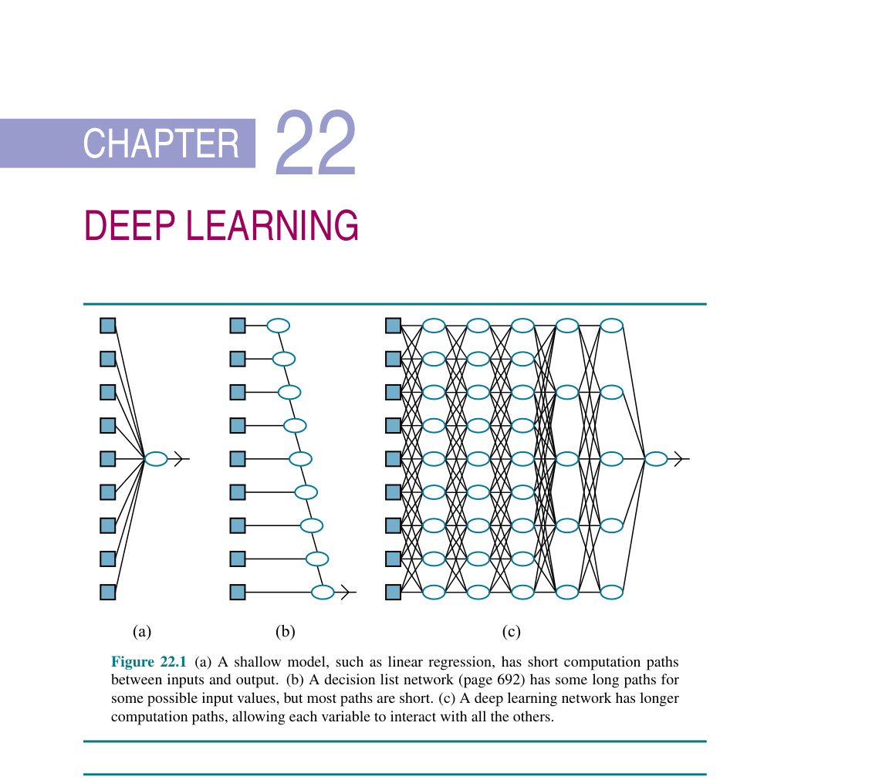
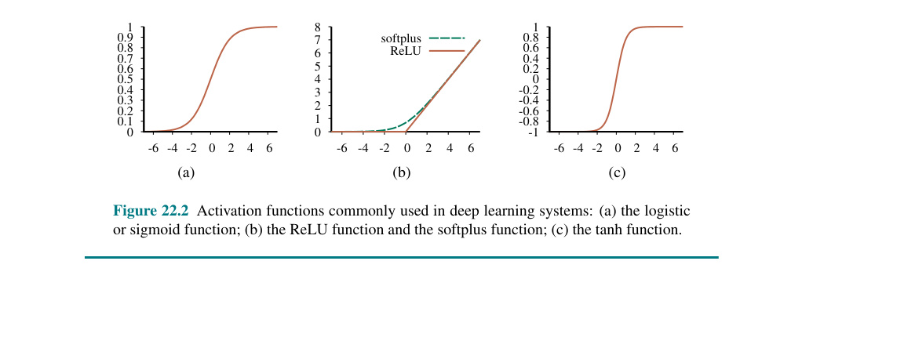
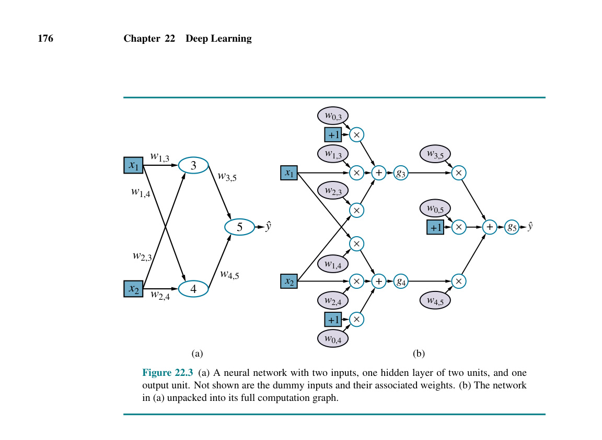
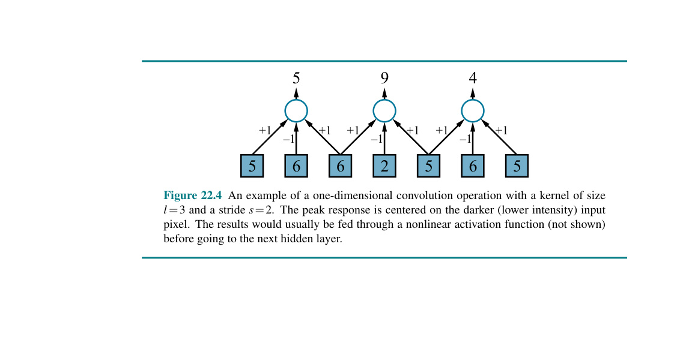
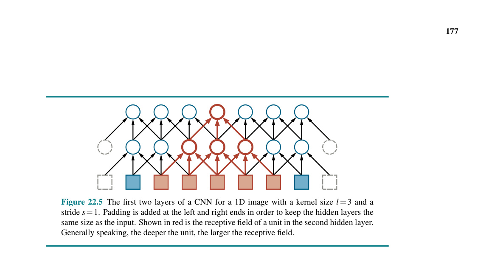
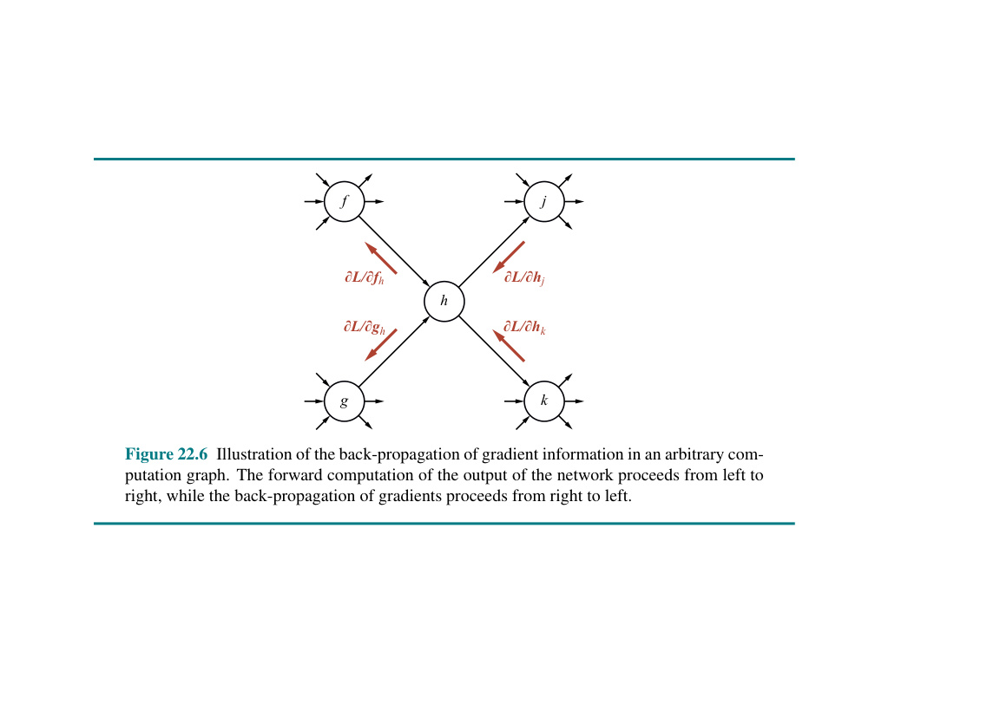
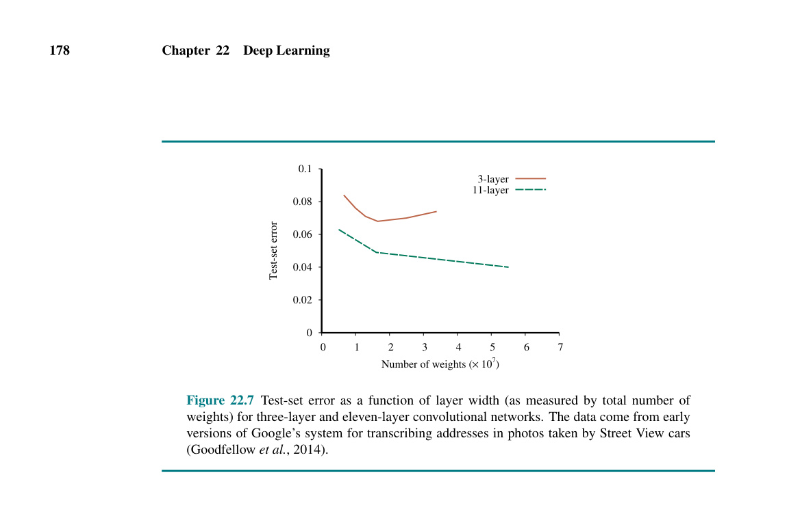
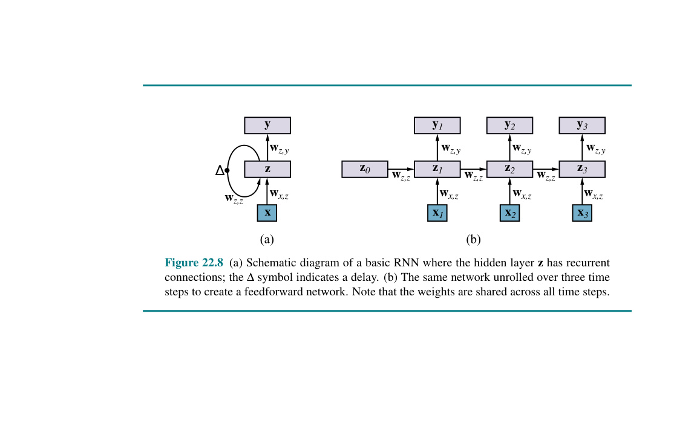
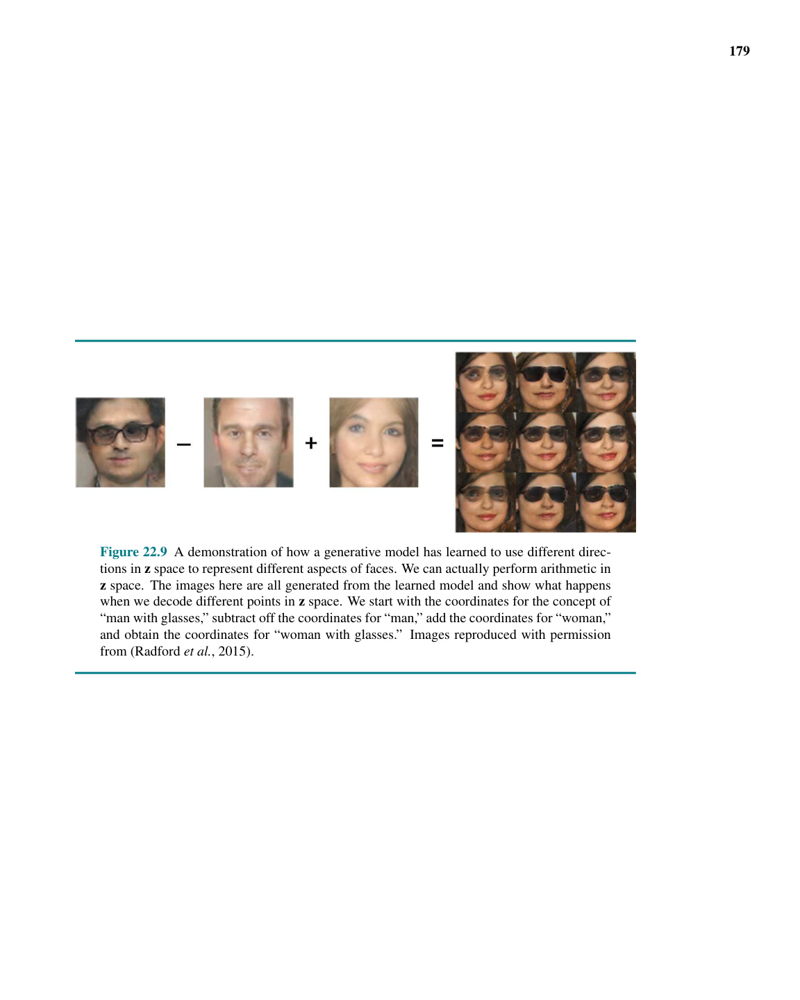

Trong đó phương pháp giảm gradient học các chương trình nhiều bước, mang lại những hàm ý quan trọng cho các phân ngành chính của trí tuệ nhân tạo.
Học sâu (Deep learning) là một họ rộng lớn các kỹ thuật dành cho học máy, trong đó các giả thuyết có dạng những mạch đại số phức tạp với các cường độ kết nối có thể điều chỉnh được. Từ "sâu" (deep) dùng để chỉ thực tế là các mạch này thường được tổ chức thành nhiều tầng (layer), điều đó có nghĩa là các đường dẫn tính toán (computation paths) từ đầu vào đến đầu ra bao gồm nhiều bước. Học sâu hiện là cách tiếp cận được sử dụng rộng rãi nhất cho các ứng dụng như nhận dạng đối tượng trực quan, dịch máy, nhận dạng giọng nói, tổng hợp giọng nói và tổng hợp hình ảnh; nó cũng đóng một vai trò quan trọng trong các ứng dụng học tăng cường (reinforcement learning) (xem Chương 23).
Học sâu có nguồn gốc từ những công trình ban đầu cố gắng mô hình hóa mạng lưới các nơ-ron trong não (McCulloch và Pitts, 1943) bằng các mạch tính toán. Vì lý do này, các mạng được huấn luyện bởi các phương pháp học sâu thường được gọi là mạng nơ-ron (neural networks), mặc dù sự giống nhau với các tế bào và cấu trúc thần kinh thực tế là rất nông cạn (superficial).
Mặc dù những lý do thực sự đằng sau sự thành công của học sâu vẫn chưa được làm sáng tỏ hoàn toàn, nhưng nó có những lợi thế hiển nhiên so với một số phương pháp đã trình bày trong Chương 19—đặc biệt đối với dữ liệu có số chiều cao (high-dimensional data) chẳng hạn như hình ảnh. Ví dụ, mặc dù các phương pháp như hồi quy tuyến tính (linear regression) và hồi quy logistic (logistic regression) có thể xử lý một số lượng lớn các biến đầu vào, nhưng đường dẫn tính toán từ mỗi đầu vào đến đầu ra là rất ngắn: chỉ cần nhân với một trọng số duy nhất, sau đó cộng dồn vào đầu ra tổng. Hơn nữa, các biến đầu vào khác nhau đóng góp một cách độc lập vào đầu ra mà không có sự tương tác với nhau (

Mặt khác, danh sách quyết định (decision lists) và cây quyết định (decision trees) lại cho phép các đường dẫn tính toán dài có thể phụ thuộc vào nhiều biến đầu vào—nhưng chỉ đối với một tỷ lệ tương đối nhỏ các véc-tơ đầu vào có thể có (Hình 22.1(b)). Nếu một cây quyết định có các đường dẫn tính toán dài cho một tỷ lệ đáng kể các đầu vào có thể có, thì kích thước của nó phải lớn theo cấp số nhân so với số lượng các biến đầu vào.
Ý tưởng cơ bản của học sâu là huấn luyện các mạch sao cho các đường dẫn tính toán dài, cho phép tất cả các biến đầu vào tương tác với nhau theo những cách phức tạp (Hình 22.1(c)). Các mô hình mạch này hóa ra lại có khả năng biểu đạt đủ lớn để nắm bắt độ phức tạp của dữ liệu trong thế giới thực đối với nhiều loại bài toán học tập quan trọng.
Mục 22.1 mô tả các mạng truyền thẳng (feedforward networks) đơn giản, các thành phần của chúng, và các nguyên tắc thiết yếu của việc học trong các mạng như vậy. Mục 22.2 đi sâu hơn vào chi tiết về cách thức các mạng sâu (deep networks) được cấu thành, và Mục 22.3 đề cập đến một lớp các mạng được gọi là mạng nơ-ron tích chập (convolutional neural networks) vốn đặc biệt quan trọng trong các ứng dụng thị giác máy tính. Mục 22.4 và 22.5 đi vào chi tiết hơn về các thuật toán dùng để huấn luyện mạng từ dữ liệu và các phương pháp giúp cải thiện tính tổng quát hóa. Mục 22.6 đề cập đến các mạng có cấu trúc hồi quy (recurrent structure), vốn rất phù hợp cho dữ liệu dạng chuỗi (sequential data). Mục 22.7 mô tả các cách sử dụng học sâu cho các tác vụ khác ngoài học có giám sát (supervised learning). Cuối cùng, Mục 22.8 khảo sát một loạt các ứng dụng của học sâu.
Hình 22.1 (a) Một mô hình nông (shallow model), chẳng hạn như hồi quy tuyến tính, có các đường dẫn tính toán ngắn giữa các đầu vào và đầu ra. (b) Một mạng danh sách quyết định (trang 692) có một vài đường dẫn dài cho một số giá trị đầu vào có thể, nhưng hầu hết các đường dẫn đều ngắn. (c) Một mạng học sâu có các đường dẫn tính toán dài hơn, cho phép mỗi biến tương tác với tất cả các biến khác.
Một mạng truyền thẳng (feedforward network), đúng như tên gọi của nó, có các kết nối chỉ đi theo một hướng duy nhất—nghĩa là, nó tạo thành một đồ thị có hướng không chu trình (directed acyclic graph) với các nút đầu vào và nút đầu ra được chỉ định. Mỗi nút tính toán một hàm của các đầu vào của nó và truyền kết quả đến các nút kế nhiệm trong mạng. Thông tin chảy qua mạng từ các nút đầu vào đến các nút đầu ra, và không có vòng lặp (loops).
Mặt khác, một mạng hồi quy (recurrent network) phản hồi (feeds back) các đầu ra trung gian hoặc đầu ra cuối cùng của nó trở lại chính các đầu vào của nó. Điều này có nghĩa là các giá trị tín hiệu bên trong mạng tạo thành một hệ thống động lực học (dynamical system) có trạng thái bên trong hoặc bộ nhớ. Chúng ta sẽ xem xét các mạng hồi quy trong Mục 22.6.
Các mạch Boolean (Boolean circuits), dùng để hiện thực hóa các hàm Boolean, là một ví dụ về các mạng truyền thẳng. Trong một mạch Boolean, các đầu vào bị giới hạn ở hai giá trị 0 và 1, và mỗi nút thực hiện một hàm Boolean đơn giản dựa trên các đầu vào của nó, tạo ra kết quả là 0 hoặc 1. Trong các mạng nơ-ron, các giá trị đầu vào thường là liên tục (continuous), và các nút nhận các đầu vào liên tục và tạo ra các đầu ra liên tục. Một số đầu vào của các nút chính là các tham số của mạng; mạng học bằng cách điều chỉnh các giá trị của các tham số này sao cho mạng nói chung khớp (fit) với dữ liệu huấn luyện.
Mỗi nút bên trong mạng được gọi là một đơn vị (unit). Theo truyền thống, dựa trên thiết kế do McCulloch và Pitts đề xuất, một đơn vị sẽ tính toán tổng có trọng số (weighted sum) của các đầu vào từ những nút đứng trước nó và sau đó áp dụng một hàm phi tuyến tính để tạo ra đầu ra của nó. Gọi $a_j$ là đầu ra của đơn vị $j$ và gọi $w_{i,j}$ là trọng số (weight) gắn trên liên kết từ đơn vị $i$ đến đơn vị $j$; khi đó chúng ta có:
$$a_j = g_j \left( \sum_i w_{i,j} a_i \right) = g_j (in_j)$$
trong đó $g_j$ là một hàm kích hoạt (activation function) phi tuyến liên kết với đơn vị $j$ và $in_j$ là tổng có trọng số của các đầu vào đối với đơn vị $j$.
Cũng như trong Mục 19.6.3 (trang 697), chúng ta quy định rằng mỗi đơn vị có một đầu vào bổ sung từ một đơn vị giả (dummy unit) $0$ luôn được cố định ở giá trị $+1$ và một trọng số $w_{0,j}$ dành cho đầu vào đó. Điều này cho phép tổng đầu vào có trọng số $in_j$ đi vào đơn vị $j$ khác không ngay cả khi tất cả các đầu ra của tầng trước đó đều bằng không. Với quy ước này, chúng ta có thể viết phương trình trên dưới dạng véc-tơ:
$$a_j = g_j(\mathbf{w}^T \mathbf{x}) \quad (22.1)$$
trong đó $\mathbf{w}$ là véc-tơ các trọng số đi vào đơn vị $j$ (bao gồm cả $w_{0,j}$) và $\mathbf{x}$ là véc-tơ của các đầu vào đi vào đơn vị $j$ (bao gồm cả giá trị $+1$).
Thực tế rằng hàm kích hoạt là phi tuyến đóng vai trò quan trọng, bởi vì nếu không như vậy, bất kỳ sự kết hợp nào của các đơn vị cũng sẽ chỉ biểu diễn một hàm tuyến tính. Tính phi tuyến (nonlinearity) là thứ cho phép các mạng lưới đủ lớn gồm các đơn vị có thể biểu diễn được những hàm tùy ý. Định lý xấp xỉ vạn năng (universal approximation theorem) phát biểu rằng một mạng lưới chỉ với hai tầng các đơn vị tính toán, trong đó tầng thứ nhất là phi tuyến tính và tầng thứ hai là tuyến tính, có thể xấp xỉ bất kỳ hàm liên tục nào đến một mức độ chính xác tùy ý. Quá trình chứng minh định lý này hoạt động bằng cách chỉ ra rằng một mạng lưới lớn theo hàm mũ có thể biểu diễn số lượng lớn theo cấp số nhân các "điểm nhô lên" (bumps) có độ cao khác nhau ở những vị trí khác nhau trong không gian đầu vào, qua đó xấp xỉ hàm mục tiêu mong muốn. Nói cách khác, những mạng lưới đủ lớn có thể hoạt động như một bảng tra cứu (lookup table) cho các hàm liên tục, giống như cách các cây quyết định đủ lớn hoạt động như một bảng tra cứu cho các hàm Boolean.
Nhiều hàm kích hoạt khác nhau được sử dụng. Phổ biến nhất là những hàm sau:

Hình 22.2 Các hàm kích hoạt thường được sử dụng trong các hệ thống học sâu: (a) hàm logistic hay sigmoid; (b) hàm ReLU và hàm softplus; (c) hàm tanh.
Đạo hàm của hàm softplus chính là hàm sigmoid.
Lưu ý rằng miền giá trị của $\tanh$ là $(-1, +1)$. Tanh là một phiên bản được thay đổi tỷ lệ và tịnh tiến của hàm sigmoid, vì $\tanh(x) = 2\sigma(2x) - 1$.
Các hàm này được hiển thị trong Hình 22.2. Nhận thấy rằng tất cả chúng đều là các hàm không giảm đơn điệu (monotonically nondecreasing), có nghĩa là đạo hàm của chúng, $g'$, là không âm. Chúng ta sẽ có nhiều điều để nói hơn về việc lựa chọn hàm kích hoạt trong các phần sau.
Việc ghép nối nhiều đơn vị lại với nhau thành một mạng tạo ra một hàm phức tạp, vốn là một sự cấu thành (composition) của các biểu thức đại số được biểu diễn bởi từng đơn vị riêng lẻ. Ví dụ, mạng được hiển thị trong

$$\hat{y} = g_5(in_5) = g_5(w_{0,5} + w_{3,5}a_3 + w_{4,5}a_4)$$ $$= g_5(w_{0,5} + w_{3,5}g_3(in_3) + w_{4,5}g_4(in_4))$$ $$= g_5(w_{0,5} + w_{3,5}g_3(w_{0,3} + w_{1,3}x_1 + w_{2,3}x_2) + w_{4,5}g_4(w_{0,4} + w_{1,4}x_1 + w_{2,4}x_2)) \quad (22.2)$$
Vì vậy, chúng ta có đầu ra $\hat{y}$ được biểu diễn như một hàm $h_{\mathbf{w}}(\mathbf{x})$ của các đầu vào và các trọng số.
Hình 22.3 (a) Một mạng nơ-ron với hai đầu vào, một tầng ẩn (hidden layer) gồm hai đơn vị, và một đơn vị đầu ra. Không được hiển thị là các đầu vào giả (dummy inputs) và các trọng số liên kết của chúng. (b) Mạng trong (a) được bung ra thành đồ thị tính toán đầy đủ của nó.
Hình 22.3(a) cho thấy cách truyền thống mà một mạng có thể được mô tả trong một cuốn sách về mạng nơ-ron. Một cách tổng quát hơn để nghĩ về mạng là dưới dạng một đồ thị tính toán (computation graph) hay đồ thị luồng dữ liệu (dataflow graph)—về cơ bản là một mạch trong đó mỗi nút biểu diễn một tính toán cơ bản. Hình 22.3(b) cho thấy đồ thị tính toán tương ứng với mạng trong Hình 22.3(a); đồ thị làm cho từng yếu tố của quá trình tính toán tổng thể trở nên rõ ràng. Nó cũng phân biệt giữa các đầu vào (màu xanh dương) và các trọng số (màu hoa cà nhạt): các trọng số có thể được điều chỉnh để làm cho đầu ra $\hat{y}$ khớp sát hơn với giá trị thực tế $y$ trong dữ liệu huấn luyện. Mỗi trọng số giống như một núm điều khiển âm lượng xác định xem nút tiếp theo trong đồ thị sẽ "nghe" được bao nhiêu từ nút tiền nhiệm cụ thể đó trong đồ thị.
Giống như Phương trình (22.1) mô tả hoạt động của một đơn vị ở dạng véc-tơ, chúng ta có thể làm điều tương tự cho toàn bộ mạng. Chúng ta thường sẽ sử dụng $\mathbf{W}$ để biểu thị một ma trận trọng số; đối với mạng này, $\mathbf{W}^{(1)}$ biểu thị các trọng số trong tầng thứ nhất ($w_{1,3}, w_{1,4}$, v.v.) và $\mathbf{W}^{(2)}$ biểu thị các trọng số trong tầng thứ hai ($w_{3,5}$, v.v.). Cuối cùng, gọi $g^{(1)}$ và $g^{(2)}$ biểu thị các hàm kích hoạt ở tầng thứ nhất và tầng thứ hai. Khi đó toàn bộ mạng có thể được viết như sau:
$$h_{\mathbf{w}}(\mathbf{x}) = g^{(2)}(\mathbf{W}^{(2)} g^{(1)}(\mathbf{W}^{(1)} \mathbf{x})) \quad (22.3)$$
Giống như Phương trình (22.2), biểu thức này tương ứng với một đồ thị tính toán, mặc dù đơn giản hơn nhiều so với đồ thị trong Hình 22.3(b): ở đây, đồ thị chỉ đơn giản là một chuỗi với các ma trận trọng số được đưa vào từng tầng.
Đồ thị tính toán trong Hình 22.3(b) tương đối nhỏ và nông, nhưng cùng một ý tưởng áp dụng cho mọi dạng học sâu: chúng ta xây dựng các đồ thị tính toán và điều chỉnh các trọng số của chúng để khớp với dữ liệu. Đồ thị trong Hình 22.3(b) cũng được kết nối hoàn toàn (fully connected), nghĩa là mỗi nút trong mỗi tầng được kết nối với mọi nút trong tầng tiếp theo. Đây ở một khía cạnh nào đó là mặc định, nhưng chúng ta sẽ thấy trong Mục 22.3 rằng việc lựa chọn tính kết nối (connectivity) của mạng cũng đóng vai trò quan trọng trong việc đạt được kết quả học hiệu quả.
Trong Mục 19.6, chúng ta đã giới thiệu một cách tiếp cận học có giám sát dựa trên giảm gradient (gradient descent): tính toán gradient (đạo hàm bậc hướng) của hàm mất mát đối với các trọng số, và điều chỉnh các trọng số dọc theo hướng của gradient để giảm mất mát. (Nếu bạn chưa đọc Mục 19.6, chúng tôi đặc biệt khuyên bạn nên làm điều đó trước khi tiếp tục). Chúng ta có thể áp dụng chính xác phương pháp tương tự vào việc học các trọng số trong các đồ thị tính toán. Đối với các trọng số dẫn vào các đơn vị trong tầng đầu ra (output layer)—những tầng tạo ra kết quả của mạng, phép tính gradient về cơ bản giống hệt quá trình trong Mục 19.6. Đối với các trọng số dẫn vào các đơn vị trong các tầng ẩn (hidden layers), vốn không được kết nối trực tiếp với các đầu ra, quá trình này chỉ phức tạp hơn một chút.
Hiện tại, chúng ta sẽ sử dụng hàm mất mát bình phương (squared loss function), $L_2$, và chúng ta sẽ tính gradient cho mạng trong Hình 22.3 đối với một ví dụ huấn luyện duy nhất $(\mathbf{x}, y)$. (Đối với nhiều ví dụ, gradient chỉ là tổng của các gradient cho từng ví dụ riêng lẻ). Mạng đưa ra một dự đoán $\hat{y} = h_{\mathbf{w}}(\mathbf{x})$ và giá trị thực sự là $y$, do đó chúng ta có:
$$\text{Loss}(h_{\mathbf{w}}) = L_2(y, h_{\mathbf{w}}(\mathbf{x})) = ||y - h_{\mathbf{w}}(\mathbf{x})||^2 = (y - \hat{y})^2$$
Để tính toán gradient của mất mát đối với các trọng số, chúng ta cần các công cụ giải tích giống như đã dùng trong Chương 19—chủ yếu là quy tắc dây chuyền (chain rule), $\frac{\partial g(f(x))}{\partial x} = g'(f(x)) \frac{\partial f(x)}{\partial x}$. Chúng ta sẽ bắt đầu với trường hợp dễ dàng: một trọng số chẳng hạn như $w_{3,5}$ vốn được kết nối trực tiếp với đơn vị đầu ra. Chúng ta thao tác trực tiếp trên các biểu thức xác định mạng từ Phương trình (22.2):
$$\frac{\partial}{\partial w_{3,5}} \text{Loss}(h_{\mathbf{w}}) = \frac{\partial}{\partial w_{3,5}} (y - \hat{y})^2 = 2(y - \hat{y}) \left( -\frac{\partial \hat{y}}{\partial w_{3,5}} \right)$$ $$= -2(y - \hat{y}) \frac{\partial}{\partial w_{3,5}} g_5(in_5) = -2(y - \hat{y}) g'_5(in_5) \frac{\partial}{\partial w_{3,5}} in_5$$ $$= -2(y - \hat{y}) g'_5(in_5) \frac{\partial}{\partial w_{3,5}} (w_{0,5} + w_{3,5}a_3 + w_{4,5}a_4)$$ $$= -2(y - \hat{y}) g'_5(in_5) a_3 \quad (22.4)$$
Sự đơn giản hóa ở dòng cuối cùng có được là bởi vì $w_{0,5}$ và $w_{4,5}a_4$ không phụ thuộc vào $w_{3,5}$, hệ số của $w_{3,5}$, $a_3$, cũng không.
Trường hợp khó hơn một chút liên quan đến một trọng số chẳng hạn như $w_{1,3}$ vốn không được kết nối trực tiếp với đơn vị đầu ra. Ở đây, chúng ta phải áp dụng quy tắc dây chuyền thêm một lần nữa. Một vài bước đầu tiên là giống hệt nhau, vì vậy chúng ta có thể bỏ qua chúng:
$$\frac{\partial}{\partial w_{1,3}} \text{Loss}(h_{\mathbf{w}}) = -2(y - \hat{y}) g'_5(in_5) \frac{\partial}{\partial w_{1,3}} (w_{0,5} + w_{3,5}a_3 + w_{4,5}a_4)$$ $$= -2(y - \hat{y}) g'_5(in_5) w_{3,5} \frac{\partial}{\partial w_{1,3}} a_3$$ $$= -2(y - \hat{y}) g'_5(in_5) w_{3,5} \frac{\partial}{\partial w_{1,3}} g_3(in_3)$$ $$= -2(y - \hat{y}) g'_5(in_5) w_{3,5} g'_3(in_3) \frac{\partial}{\partial w_{1,3}} in_3$$ $$= -2(y - \hat{y}) g'_5(in_5) w_{3,5} g'_3(in_3) \frac{\partial}{\partial w_{1,3}} (w_{0,3} + w_{1,3}x_1 + w_{2,3}x_2)$$ $$= -2(y - \hat{y}) g'_5(in_5) w_{3,5} g'_3(in_3) x_1 \quad (22.5)$$
Như vậy, chúng ta có những biểu thức khá đơn giản cho gradient của mất mát đối với các trọng số $w_{3,5}$ và $w_{1,3}$.
Nếu chúng ta định nghĩa $\Delta_5 = -2(y - \hat{y}) g'_5(in_5)$ giống như một kiểu "sai số được nhận thức" (perceived error) tại điểm mà đơn vị 5 nhận đầu vào của nó, thì gradient đối với $w_{3,5}$ chỉ đơn giản là $\Delta_5 a_3$. Điều này hoàn toàn có ý nghĩa: nếu $\Delta_5$ là dương, điều đó có nghĩa là $\hat{y}$ quá lớn (nhắc lại rằng $g'$ luôn không âm); nếu $a_3$ cũng dương, thì việc tăng $w_{3,5}$ sẽ chỉ làm mọi thứ tệ hơn, trong khi đó nếu $a_3$ âm, thì việc tăng $w_{3,5}$ sẽ làm giảm sai số. Độ lớn của $a_3$ cũng quan trọng: nếu $a_3$ nhỏ đối với ví dụ huấn luyện này, thì $w_{3,5}$ đã không đóng vai trò chính trong việc tạo ra sai số và do đó không cần phải thay đổi nhiều.
Nếu chúng ta cũng định nghĩa $\Delta_3 = \Delta_5 w_{3,5} g'_3(in_3)$, thì gradient đối với $w_{1,3}$ trở thành chỉ là $\Delta_3 x_1$. Do đó, sai số được nhận thức tại đầu vào của đơn vị 3 chính là sai số được nhận thức tại đầu vào của đơn vị 5, nhân với thông tin truyền dọc theo đường dẫn từ đơn vị 5 ngược trở lại đơn vị 3. Hiện tượng này hoàn toàn mang tính tổng quát, và làm phát sinh thuật ngữ lan truyền ngược (back-propagation) để chỉ cách thức mà sai số tại đầu ra được truyền ngược trở lại qua mạng.
Một đặc điểm quan trọng khác của các biểu thức gradient này là chúng có các đạo hàm cục bộ $g'_j(in_j)$ đóng vai trò là các nhân tử (factors). Như đã lưu ý ở trên, các đạo hàm này luôn luôn không âm, nhưng chúng có thể rất gần bằng không (trong trường hợp của các hàm sigmoid, softplus, và tanh) hoặc chính xác bằng không (trong trường hợp của ReLU), nếu như các đầu vào từ ví dụ huấn luyện đang được xét đến nằm trong vùng đó của hàm kích hoạt.
vô tình đặt đơn vị $j$ vào vùng hoạt động bằng phẳng (flat operating region). Nếu đạo hàm $g'_j$ nhỏ hoặc bằng không, điều đó có nghĩa là việc thay đổi các trọng số dẫn vào đơn vị $j$ sẽ có tác động không đáng kể lên đầu ra của nó. Do đó, các mạng sâu với nhiều tầng có thể gặp phải tình trạng gradient biến mất (vanishing gradient)—các tín hiệu lỗi bị triệt tiêu hoàn toàn khi chúng được truyền ngược qua mạng. Mục 22.3.3 cung cấp một giải pháp cho vấn đề này.
Chúng ta đã chỉ ra rằng các gradient trong ví dụ mạng nhỏ bé của chúng ta là những biểu thức đơn giản có thể được tính toán bằng cách truyền thông tin ngược qua mạng từ các đơn vị đầu ra. Hóa ra tính chất này còn đúng ở quy mô tổng quát hơn. Trên thực tế, như chúng ta sẽ chỉ ra trong Mục 22.4.1, các tính toán gradient cho bất kỳ đồ thị tính toán truyền thẳng nào cũng đều có cấu trúc tương tự như bản thân đồ thị tính toán cơ sở đó. Tính chất này được suy ra một cách trực tiếp từ các quy tắc lấy đạo hàm.
Chúng ta đã chỉ ra những chi tiết phức tạp của một phép tính gradient, nhưng đừng lo lắng: không cần phải thực hiện lại việc đạo hàm như trong các Phương trình (22.4) và (22.5) cho mỗi cấu trúc mạng mới! Tất cả các gradient như vậy đều có thể được tính toán bằng phương pháp vi phân tự động (automatic differentiation), vốn áp dụng các quy tắc giải tích một cách có hệ thống để tính toán gradient cho bất kỳ chương trình tính toán số trị (numeric program) nào.1 Trên thực tế, phương pháp lan truyền ngược (back-propagation) trong học sâu chỉ đơn giản là một ứng dụng của vi phân ở chế độ lùi (reverse mode differentiation), vốn áp dụng quy tắc dây chuyền "từ ngoài vào trong" và đạt được các lợi ích về hiệu suất của quy hoạch động (dynamic programming) khi mạng đang xét có nhiều đầu vào nhưng lại có tương đối ít đầu ra.
Tất cả các gói phần mềm lớn dành cho học sâu đều cung cấp khả năng vi phân tự động, để người dùng có thể thoải mái thử nghiệm với nhiều cấu trúc mạng khác nhau, các hàm kích hoạt, các hàm mất mát, và các dạng cấu trúc khác nhau mà không cần phải thực hiện quá nhiều tính toán giải tích để xây dựng một thuật toán học mới cho từng thử nghiệm. Điều này đã khuyến khích một cách tiếp cận được gọi là học đầu-cuối (end-to-end learning), trong đó một hệ thống tính toán phức tạp cho một tác vụ chẳng hạn như dịch máy có thể được cấu thành từ một số hệ thống con có thể huấn luyện được; toàn bộ hệ thống sau đó được huấn luyện theo phương thức đầu-đến-cuối từ các cặp đầu vào/đầu ra. Với cách tiếp cận này, người thiết kế chỉ cần có một ý tưởng sơ lược về cách tổ chức cấu trúc của toàn bộ hệ thống; không cần thiết phải biết trước chính xác từng hệ thống con phải làm gì hoặc làm cách nào để gán nhãn cho các đầu vào và đầu ra của nó.
1 Các phương pháp vi phân tự động ban đầu được phát triển vào những năm 1960 và 1970 để tối ưu hóa các tham số của những hệ thống được định nghĩa bởi các chương trình Fortran lớn và phức tạp.
Chúng ta đã thiết lập các ý tưởng cơ bản của học sâu: biểu diễn các giả thuyết dưới dạng đồ thị tính toán với các trọng số có thể điều chỉnh và tính toán gradient của hàm mất mát đối với các trọng số đó nhằm khớp với dữ liệu huấn luyện. Bây giờ chúng ta sẽ xem xét cách thức lắp ráp các đồ thị tính toán lại với nhau. Chúng ta bắt đầu với tầng đầu vào, nơi ví dụ huấn luyện hoặc kiểm tra $\mathbf{x}$ được mã hóa dưới dạng giá trị của các nút đầu vào. Sau đó, chúng ta xem xét tầng đầu ra, nơi các kết quả dự đoán $\hat{y}$ được so sánh với các giá trị thực tế $y$ để tạo ra một tín hiệu học tập phục vụ việc tinh chỉnh trọng số. Cuối cùng, chúng ta sẽ xem xét các tầng ẩn của mạng.
Các nút đầu vào và nút đầu ra của một đồ thị tính toán là những nút kết nối trực tiếp với dữ liệu đầu vào $\mathbf{x}$ và dữ liệu đầu ra $\mathbf{y}$. Việc mã hóa dữ liệu đầu vào thường khá đơn giản, ít nhất là trong trường hợp dữ liệu đã được phân tích cấu trúc thành các đặc trưng (factored data), nơi mỗi ví dụ huấn luyện chứa các giá trị cho $n$ thuộc tính đầu vào. Nếu các thuộc tính là dạng Boolean, chúng ta có $n$ nút đầu vào; thông thường false được ánh xạ thành đầu vào là 0 và true được ánh xạ thành 1, mặc dù đôi khi -1 và +1 cũng được sử dụng. Các thuộc tính dạng số, cho dù là số nguyên hay số thực, thường được sử dụng nguyên trạng, mặc dù chúng có thể được thay đổi tỷ lệ (scaled) để vừa vặn trong một phạm vi cố định; nếu cường độ (magnitudes) của các ví dụ khác nhau dao động quá lớn, các giá trị có thể được ánh xạ theo thang logarit.
Hình ảnh không hoàn toàn nằm trong loại dữ liệu được cấu trúc; mặc dù một ảnh RGB kích thước $X \times Y$ pixel có thể được coi là $3 \times X \times Y$ thuộc tính dạng số nguyên (thường với các giá trị trong khoảng $\{0, \dots, 255\}$), cách này sẽ phớt lờ đi thực tế là các bộ ba RGB thuộc về cùng một pixel trên ảnh và thực tế là sự liền kề giữa các pixel (pixel adjacency) thực sự rất quan trọng. Tất nhiên, chúng ta có thể ánh xạ các pixel liền kề lên các nút đầu vào kề nhau trong mạng, nhưng ý nghĩa của sự liền kề sẽ hoàn toàn bị mất đi nếu các tầng bên trong của mạng được kết nối hoàn toàn (fully connected). Trong thực tế, các mạng sử dụng dữ liệu hình ảnh có các cấu trúc bên trong dạng mảng (array-like) nhằm phản ánh ngữ nghĩa của sự liền kề. Chúng ta sẽ xem xét điều này chi tiết hơn trong Mục 22.3.
Các thuộc tính dạng danh mục (categorical attributes) với nhiều hơn hai giá trị—giống như thuộc tính $Type$ trong bài toán về nhà hàng từ Chương 19, với các giá trị như French, Italian, Thai, hoặc burger—thường được mã hóa bằng cách sử dụng kiểu mã hóa one-hot (one-hot encoding). Một thuộc tính có $d$ giá trị có thể có sẽ được đại diện bởi $d$ bit đầu vào riêng biệt. Đối với bất kỳ giá trị cụ thể nào, bit đầu vào tương ứng sẽ được đặt thành 1 và tất cả các bit khác được đặt thành 0. Cách này nói chung thường hoạt động tốt hơn là ánh xạ các giá trị vào các số nguyên. Nếu chúng ta sử dụng số nguyên cho thuộc tính $Type$, Thai có thể là 3 và burger có thể là 4. Vì mạng là một sự kết hợp của các hàm liên tục, nó sẽ không có sự lựa chọn nào khác ngoài việc chú ý đến sự liền kề về mặt số học, nhưng trong trường hợp này sự liền kề bằng số học giữa Thai và burger không có bất kỳ ý nghĩa ngữ nghĩa nào cả.
Ở phía đầu ra của mạng, bài toán mã hóa các giá trị dữ liệu thô thành các giá trị thực tế $y$ cho các nút đầu ra của đồ thị cũng tương tự như bài toán mã hóa đầu vào. Ví dụ: nếu mạng đang cố gắng dự đoán biến $Weather$ từ Chương 12, biến có các giá trị là $\{sun, rain, cloud, snow\}$, chúng ta sẽ sử dụng kiểu mã hóa one-hot với bốn bit.
Đó là đối với các giá trị dữ liệu $y$. Còn đối với kết quả dự đoán $\hat{y}$ thì sao? Lý tưởng nhất, nó sẽ hoàn toàn khớp với giá trị mục tiêu $y$, và lúc đó hàm mất mát sẽ bằng không, và chúng ta đã hoàn thành công việc. Trên thực tế, điều này hiếm khi xảy ra—đặc biệt là trước khi chúng ta bắt đầu quá trình điều chỉnh trọng số! Do đó, chúng ta cần nghĩ xem một giá trị đầu ra không chính xác có ý nghĩa gì, và làm cách nào để đo lường hàm mất mát đó. Khi thiết lập các đạo hàm gradient ở Phương trình (22.4) và (22.5), chúng ta đã bắt đầu với hàm mất mát sai số bình phương (squared-error loss). Điều này giữ cho đại số được đơn giản, nhưng nó không phải là giải pháp duy nhất. Trên thực tế, đối với hầu hết các ứng dụng học sâu, người ta thường diễn giải các giá trị đầu ra $\hat{y}$ như là những xác suất và sử dụng hàm negative log likelihood (ước lượng hợp lý cực đại âm) làm hàm mất mát—giống hệt như cách chúng ta đã làm với việc học hợp lý cực đại (maximum likelihood learning) trong Chương 21.
Quá trình học hợp lý cực đại tìm kiếm giá trị của $\mathbf{w}$ để cực đại hóa xác suất của các dữ liệu quan sát được. Và bởi vì hàm log là một hàm đơn điệu, điều này tương đương với việc cực đại hóa hàm log likelihood của dữ liệu, và điều này lại tiếp tục tương đương với việc cực tiểu hóa hàm mất mát được định nghĩa là negative log likelihood. (Nhớ lại từ trang 776 rằng việc lấy log biến các phép nhân xác suất thành các phép cộng, những thứ dễ dàng hơn cho việc lấy đạo hàm). Nói cách khác, chúng ta đang tìm kiếm $\mathbf{w}$ sao cho nó làm cực tiểu hóa tổng của các log xác suất âm từ $N$ ví dụ huấn luyện:
$$\mathbf{w}^* = \arg\min_{\mathbf{w}} \sum_{j=1}^N -\log P_{\mathbf{w}}(y_j | \mathbf{x}_j) \quad (22.6)$$
Trong các tài liệu về học sâu, rất phổ biến khi đề cập đến việc giảm thiểu mất mát entropy chéo (cross-entropy). Entropy chéo, được viết là $H(P, Q)$, là một dạng đo lường sự khác biệt giữa hai phân phối $P$ và $Q$.2 Định nghĩa tổng quát là:
$$H(P, Q) = E_{z \sim P(z)}[-\log Q(z)] = - \int P(z) \log Q(z) dz \quad (22.7)$$
Trong học máy, chúng ta thường sử dụng định nghĩa này với $P$ là phân phối thực (true distribution) trên các ví dụ huấn luyện, $P(\mathbf{x}, y)$, và $Q$ là giả thuyết dự đoán $P_{\mathbf{w}}(y | \mathbf{x})$. Việc giảm thiểu lượng entropy chéo $H(P(\mathbf{x}, y), P_{\mathbf{w}}(y | \mathbf{x}))$ bằng cách điều chỉnh $\mathbf{w}$ làm cho giả thuyết gần với phân phối thực tế nhất có thể. Trong thực tế, chúng ta không thể giảm thiểu lượng entropy chéo này vì chúng ta không có quyền truy cập vào phân phối dữ liệu thực sự $P(\mathbf{x}, y)$; nhưng chúng ta có quyền truy cập vào các mẫu từ $P(\mathbf{x}, y)$, vì vậy tổng trên dữ liệu thực tế trong Phương trình (22.6) là một ước lượng xấp xỉ cho kỳ vọng trong Phương trình (22.7).
Để giảm thiểu negative log likelihood (hoặc entropy chéo), chúng ta cần phải có khả năng diễn giải đầu ra của mạng như là một xác suất. Ví dụ, nếu mạng có một đơn vị đầu ra với hàm kích hoạt sigmoid và đang học một phân loại Boolean, chúng ta có thể diễn giải giá trị đầu ra trực tiếp thành xác suất mà ví dụ đó thuộc về lớp tích cực. (Trên thực tế, đây chính xác là cách hồi quy logistic được sử dụng; xem trang 702). Vì vậy, đối với các bài toán phân loại Boolean, chúng ta thường sử dụng một tầng đầu ra sigmoid.
Các bài toán phân loại đa lớp (multiclass classification) rất phổ biến trong học máy. Ví dụ, các bộ phân loại được dùng để nhận diện đối tượng thường cần nhận diện hàng nghìn hạng mục đối tượng khác nhau. Các mô hình ngôn ngữ tự nhiên cố gắng dự đoán từ tiếp theo trong một câu có thể sẽ phải chọn giữa hàng chục ngàn từ có thể có. Đối với kiểu dự đoán này, chúng ta cần mạng lưới xuất ra một phân phối dạng danh mục (categorical distribution)—nghĩa là, nếu có $d$ câu trả lời có thể xảy ra, chúng ta cần $d$ nút đầu ra đại diện cho các xác suất có tổng bằng 1.
Để đạt được điều này, chúng ta sử dụng một tầng softmax (softmax layer), xuất ra một véc-tơ gồm $d$ giá trị khi nhận vào một véc-tơ của các giá trị đầu vào $\mathbf{in} = \langle in_1, \dots, in_d \rangle$. Phần tử thứ $k$ của véc-tơ đầu ra đó được cho bởi:
$$\text{softmax}(\mathbf{in})_k = \frac{e^{in_k}}{\sum_{k'=1}^d e^{in_{k'}}}$$
Theo như cấu trúc, hàm softmax trả ra một véc-tơ của các số không âm có tổng bằng 1. Như thường lệ, đầu vào $in_k$ đến mỗi nút đầu ra sẽ là một sự kết hợp tuyến tính có trọng số từ các đầu ra của tầng đứng trước. Bởi vì các hàm số mũ, tầng softmax nhấn mạnh các khác biệt giữa những đầu vào: ví dụ, nếu véc-tơ của các đầu vào được cho bởi $\mathbf{in} = \langle 5, 2, 0, -2 \rangle$, thì các giá trị đầu ra sẽ là $\langle 0.946, 0.047, 0.006, 0.001 \rangle$. Mặc dù vậy, hàm softmax vẫn là hàm trơn và có thể lấy đạo hàm được (Bài tập 22. SOFG), không giống như hàm max. Rất dễ dàng để chứng minh (Bài tập 22. SMSG) rằng hàm sigmoid là một hàm softmax với $d=2$. Nói cách khác, giống như việc các đơn vị sigmoid truyền đạt thông tin phân lớp nhị phân (binary class) qua một mạng lưới, các đơn vị softmax cũng truyền đạt thông tin đa lớp (multiclass).
Đối với bài toán hồi quy (regression problem), nơi mà giá trị mục tiêu $y$ là biến liên tục, người ta thường sử dụng một tầng đầu ra tuyến tính—nói cách khác, $\hat{y}_j = in_j$, mà không có bất kỳ hàm kích hoạt $g$ nào cả—và diễn giải điều này như là giá trị trung bình của một tiên đoán Gaussian có phương sai cố định. Như chúng ta đã lưu ý ở trang 780, việc cực đại hóa hàm likelihood (tức là cực tiểu hóa hàm negative log likelihood) với một phân phối Gaussian có phương sai cố định giống như việc cực tiểu hóa sai số bình phương (squared error). Do đó, một tầng đầu ra tuyến tính được diễn giải theo cách này là một lựa chọn tự nhiên cho bài toán hồi quy.
2 Entropy chéo không phải là một "khoảng cách" theo nghĩa thông thường bởi vì $H(P, P)$ không bằng không; thay vào đó, nó bằng với giá trị entropy $H(P)$. Rất dễ dàng để chỉ ra rằng $H(P, Q) = H(P) + D_{KL}(P || Q)$, trong đó $D_{KL}$ là khoảng cách Kullback–Leibler divergence, vốn thỏa mãn $D_{KL}(P || P) = 0$. Vì vậy, đối với phân phối $P$ cố định, việc thay đổi $Q$ để làm giảm thiểu lượng entropy chéo cũng đồng thời làm giảm thiểu độ phân kỳ KL divergence.
cách mà hồi quy tuyến tính cổ điển vẫn làm. Các đặc trưng đầu vào cho phép hồi quy tuyến tính này chính là các đầu ra từ tầng đứng trước, vốn thường là kết quả của nhiều phép biến đổi phi tuyến đối với các đầu vào ban đầu của mạng.
Rất nhiều các tầng đầu ra khác cũng có thể được sử dụng. Ví dụ, một tầng mật độ hỗn hợp (mixture density layer) biểu diễn các đầu ra sử dụng một hỗn hợp của các phân phối Gaussian. (Xem Mục 21.3.1 để biết thêm chi tiết về hỗn hợp Gaussian). Các tầng như vậy sẽ dự đoán tần suất tương đối của mỗi thành phần trong hỗn hợp, giá trị trung bình của mỗi thành phần, và phương sai của mỗi thành phần. Miễn là các giá trị đầu ra này được hàm mất mát diễn giải một cách hợp lý như là việc định nghĩa xác suất cho giá trị đầu ra thực tế $y$, thì mạng lưới, sau khi trải qua huấn luyện, sẽ khớp được một mô hình hỗn hợp Gaussian (Gaussian mixture model) trong không gian của các đặc trưng được định nghĩa bởi các tầng đứng trước.
Trong quá trình huấn luyện, một mạng nơ-ron được tiếp xúc với rất nhiều giá trị đầu vào $\mathbf{x}$ và rất nhiều giá trị đầu ra tương ứng $y$. Trong khi xử lý một véc-tơ đầu vào $\mathbf{x}$, mạng nơ-ron thực hiện một vài bước tính toán trung gian trước khi tạo ra đầu ra $y$. Chúng ta có thể nghĩ về các giá trị được tính toán tại mỗi tầng của mạng lưới giống như một biểu diễn (representation) khác nhau cho đầu vào $\mathbf{x}$. Mỗi tầng biến đổi biểu diễn được tạo ra bởi tầng trước đó để tạo thành một biểu diễn mới. Sự cấu thành của tất cả các phép biến đổi này thành công—nếu mọi việc suôn sẻ—trong việc chuyển đổi đầu vào thành đầu ra mong muốn. Trên thực tế, một giả thuyết giải thích lý do tại sao học sâu lại hoạt động tốt đến vậy là sự biến đổi đầu-đến-cuối (end-to-end) phức tạp thực hiện việc ánh xạ từ đầu vào đến đầu ra—ví dụ, từ một hình ảnh đầu vào sang hạng mục đầu ra "con hươu cao cổ"—được phân rã bởi rất nhiều tầng thành sự cấu thành của nhiều phép biến đổi tương đối đơn giản, mỗi phép biến đổi trong số đó khá dễ dàng để học tập bởi một quá trình cập nhật mang tính cục bộ (local updating process).
Trong quá trình hình thành tất cả các phép biến đổi nội tại này, các mạng sâu thường tự khám phá ra được những biểu diễn trung gian có ý nghĩa về dữ liệu. Ví dụ, một mạng lưới đang học cách nhận dạng các đối tượng phức tạp trong hình ảnh có thể sẽ hình thành nên các tầng nội bộ chuyên phát hiện các đơn vị thành phần hữu ích: các cạnh, các góc, các hình elip, đôi mắt, khuôn mặt—những con mèo. Hoặc nó cũng có thể không làm thế—các mạng sâu có thể hình thành những tầng nội bộ mà ý nghĩa của chúng hoàn toàn mù mờ đối với con người, mặc dù đầu ra vẫn hoàn toàn chính xác.
Các tầng ẩn của mạng nơ-ron thường ít đa dạng hơn so với các tầng đầu ra. Trong 25 năm đầu tiên của việc nghiên cứu với các mạng nhiều tầng (multilayer networks) (khoảng thời gian 1985–2010), các nút nội bộ hầu như chỉ độc quyền sử dụng hàm kích hoạt sigmoid và tanh. Bắt đầu từ khoảng năm 2010 trở đi, ReLU và softplus trở nên phổ biến hơn, một phần vì chúng được cho là có khả năng tránh được vấn đề gradient biến mất (vanishing gradients) đã đề cập trong Mục 22.1.2. Các thử nghiệm với các mạng lưới ngày càng sâu cho thấy rằng, trong nhiều trường hợp, quá trình học mang lại kết quả tốt hơn với những mạng lưới sâu nhưng tương đối hẹp (narrow) thay vì những mạng nông nhưng rộng, cho trước một tổng số lượng các trọng số cố định. Một ví dụ điển hình cho điều này được thể hiện trong Hình 22.7 ở trang 820.
Tất nhiên, có rất nhiều cấu trúc khác để xem xét khi xây dựng các đồ thị tính toán, ngoài việc chỉ chơi đùa với chiều rộng (width) và độ sâu (depth). Tính đến thời điểm cuốn sách này được viết, vẫn còn rất ít hiểu biết về lý do tại sao một số cấu trúc nhất định dường như lại hoạt động tốt hơn những cấu trúc khác đối với một số bài toán cụ thể. Thông qua kinh nghiệm, những người thực hành (practitioners) có được một số trực giác về cách thiết kế mạng lưới cũng như cách sửa chữa chúng khi chúng không hoạt động, giống như cách các đầu bếp có trực giác về cách thiết kế các công thức nấu ăn và cách sửa chúng khi món ăn có vị không ngon. Vì lý do này, những công cụ giúp tạo điều kiện thuận lợi cho việc khám phá nhanh chóng và đánh giá các cấu trúc mạng khác nhau là vô cùng thiết yếu để đạt được thành công trong các bài toán thực tế.
Chúng tôi đã đề cập trong Mục 22.2.1 rằng một hình ảnh không thể được coi như một véc-tơ đơn giản của các giá trị điểm ảnh (pixel) đầu vào, chủ yếu là do sự liền kề của các pixel (pixel adjacency) thực sự có ý nghĩa quan trọng. Nếu chúng ta xây dựng một mạng lưới với các tầng kết nối hoàn toàn (fully connected) và lấy một hình ảnh làm đầu vào, chúng ta sẽ nhận được cùng một kết quả bất kể chúng ta huấn luyện bằng những hình ảnh không bị xáo trộn hay bằng những hình ảnh mà tất cả pixel của chúng đã bị hoán vị ngẫu nhiên. Hơn nữa, giả sử có $n$ pixel và $n$ đơn vị trong tầng ẩn đầu tiên, nơi các pixel cung cấp đầu vào. Nếu đầu vào và tầng ẩn đầu tiên được kết nối hoàn toàn, điều đó có nghĩa là sẽ có $n^2$ trọng số; đối với một hình ảnh RGB tiêu chuẩn có độ phân giải megapixel, con số đó lên tới 9 nghìn tỷ trọng số. Một không gian tham số khổng lồ như vậy sẽ đòi hỏi một lượng ảnh huấn luyện khổng lồ tương ứng và một ngân sách điện toán khổng lồ để chạy thuật toán huấn luyện.
Những cân nhắc này gợi ý rằng chúng ta nên xây dựng tầng ẩn đầu tiên sao cho mỗi đơn vị ẩn chỉ nhận đầu vào từ một khu vực nhỏ, cục bộ (local region) của hình ảnh. Điều này mang lại lợi ích "một mũi tên trúng hai đích". Thứ nhất, nó tôn trọng nguyên tắc về sự liền kề, ít nhất là ở mức độ cục bộ. (Và chúng ta sẽ thấy ở phần sau rằng nếu các tầng tiếp theo cũng có cùng tính chất cục bộ này, thì mạng lưới sẽ tôn trọng sự liền kề theo nghĩa toàn cục). Thứ hai, nó giúp cắt giảm mạnh số lượng các trọng số: nếu mỗi vùng cục bộ có $l \ll n$ pixel, thì tổng cộng sẽ chỉ có $ln \ll n^2$ trọng số.
Đến đây mọi việc vẫn ổn. Nhưng chúng ta đang bỏ lỡ một thuộc tính quan trọng khác của hình ảnh: nói một cách sơ lược, bất cứ thứ gì có thể phát hiện được ở một vùng nhỏ, cục bộ trên ảnh—có thể là một con mắt hay một cọng cỏ—cũng sẽ trông giống y hệt như vậy nếu nó xuất hiện ở một vùng nhỏ, cục bộ khác trên ảnh. Nói cách khác, chúng ta kỳ vọng dữ liệu hình ảnh sẽ thể hiện tính bất biến không gian xấp xỉ (approximate spatial invariance), ít nhất là ở các tỷ lệ vừa và nhỏ.3 Chúng ta không nhất thiết mong đợi các nửa trên của những bức ảnh sẽ trông giống như các nửa dưới, nên có một mức tỷ lệ mà ở đó tính bất biến không gian không còn đúng nữa.
Tính bất biến không gian cục bộ (Local spatial invariance) có thể đạt được bằng cách ràng buộc (constraining) $l$ trọng số nối một vùng cục bộ với một đơn vị trong tầng ẩn phải giống hệt nhau đối với mọi đơn vị ẩn. (Nghĩa là, đối với các đơn vị ẩn $i$ và $j$, các trọng số $w_{1,i}, \dots, w_{l,i}$ hoàn toàn giống với $w_{1,j}, \dots, w_{l,j}$). Điều này biến các đơn vị ẩn thành các cỗ máy phát hiện đặc trưng (feature detectors) giúp phát hiện cùng một đặc trưng đó bất kể nó xuất hiện ở đâu trong hình ảnh. Thông thường, chúng ta muốn tầng ẩn đầu tiên phát hiện ra nhiều loại đặc trưng khác nhau, chứ không chỉ một loại; vậy nên đối với mỗi vùng ảnh cục bộ, chúng ta có thể có $d$ đơn vị ẩn với $d$ bộ trọng số riêng biệt. Điều này có nghĩa là có tổng cộng $dl$ trọng số—một con số không chỉ nhỏ hơn rất rất nhiều so với $n^2$, mà thực chất nó độc lập với $n$, tức là kích thước của hình ảnh. Do đó, bằng cách bơm vào một số kiến thức có trước (prior knowledge)—cụ thể là, kiến thức về sự liền kề và tính bất biến không gian—chúng ta có thể phát triển những mô hình có số lượng tham số ít hơn rất nhiều và có thể học nhanh hơn đáng kể.
Một mạng nơ-ron tích chập (convolutional neural network - CNN) là mạng có chứa các kết nối cục bộ về mặt không gian, ít nhất là trong các tầng đầu tiên, và có các mẫu cấu trúc trọng số được nhân bản trên tất cả các đơn vị trong mỗi tầng. Một mẫu cấu trúc trọng số được nhân bản ngang qua nhiều vùng cục bộ khác nhau được gọi là một hạt nhân (kernel) và quá trình áp dụng hạt nhân vào các pixel của hình ảnh (hoặc vào các đơn vị được tổ chức theo không gian ở một tầng tiếp sau) được gọi là tích chập (convolution).4
Các hạt nhân và các phép tích chập dễ được minh họa nhất trong không gian một chiều thay vì hai chiều hoặc nhiều hơn, vì vậy chúng ta sẽ giả định một véc-tơ đầu vào $\mathbf{x}$ có kích thước $n$, tương ứng với $n$ pixel trong một hình ảnh 1D, và một véc-tơ hạt nhân $\mathbf{k}$ có kích thước $l$. (Để cho đơn giản, chúng ta sẽ giả định $l$ là một số lẻ). Tất cả những ý tưởng này đều có thể được áp dụng một cách trực tiếp cho các trường hợp có số chiều cao hơn.
Chúng ta ký hiệu phép toán tích chập bằng biểu tượng $*$, ví dụ: $\mathbf{z} = \mathbf{x} * \mathbf{k}$. Phép toán được định nghĩa như sau:
$$z_i = \sum_{j=1}^l k_j x_{j + i - (l+1)/2} \quad (22.8)$$
Nói cách khác, đối với mỗi vị trí đầu ra $i$, chúng ta lấy tích vô hướng (dot product) giữa hạt nhân $\mathbf{k}$ và một trích đoạn của $\mathbf{x}$ có tâm tại $x_i$ với chiều rộng là $l$.

Hình 22.4 Một ví dụ về phép toán tích chập một chiều với kích thước hạt nhân $l=3$ và sải bước $s=2$. Đỉnh của phản hồi được tập trung ở pixel đầu vào tối hơn (cường độ thấp hơn). Các kết quả thường sẽ được đưa qua một hàm kích hoạt phi tuyến tính (không hiển thị) trước khi đi đến tầng ẩn tiếp theo.
Quá trình này được minh họa trong Hình 22.4 với một véc-tơ hạt nhân $[+1, -1, +1]$, có chức năng phát hiện ra một điểm tối hơn trong hình ảnh 1D. (Phiên bản 2D có thể sẽ phát hiện một đường kẻ tối hơn). Nhận thấy rằng trong ví dụ này, các pixel nơi các hạt nhân được đặt tâm được ngăn cách bởi một khoảng cách là 2 pixel; chúng ta nói rằng hạt nhân được áp dụng với một sải bước (stride) $s=2$. Chú ý rằng tầng đầu ra có ít pixel hơn: do có sải bước, số lượng pixel giảm từ $n$ xuống chỉ còn khoảng $n/s$. (Trong không gian 2D, số lượng pixel sẽ xấp xỉ bằng $n / (s_x s_y)$, với $s_x$ và $s_y$ là sải bước theo các hướng $x$ và $y$ trong hình ảnh). Chúng ta nói "khoảng" là bởi vì những gì xảy ra ở vùng rìa của hình ảnh: trong Hình 22.4 phép tích chập dừng lại ở các mép của hình ảnh, nhưng người ta cũng có thể đệm (pad) cho đầu vào bằng các pixel bổ sung (có thể là các số không hoặc là bản sao của các pixel nằm ngoài cùng) sao cho hạt nhân có thể được áp dụng chính xác $\lfloor n/s \rfloor$ lần. Đối với các hạt nhân nhỏ, chúng ta thường sử dụng $s=1$, do đó đầu ra có cùng các chiều (dimensions) như ảnh ban đầu (xem Hình 22.5).
Hoạt động áp dụng một hạt nhân ngang qua một hình ảnh có thể được thực hiện theo cách hiển nhiên bởi một chương trình với các vòng lặp lồng nhau phù hợp; nhưng nó cũng có thể được hình thức hóa thành một phép toán ma trận duy nhất, giống hệt như việc áp dụng ma trận trọng số trong Phương trình (22.1). Ví dụ, phép tích chập minh họa trong Hình 22.4 có thể được xem như phép nhân ma trận sau đây:
$$ \begin{pmatrix} +1 & -1 & +1 & 0 & 0 & 0 & 0 \\ 0 & 0 & +1 & -1 & +1 & 0 & 0 \\ 0 & 0 & 0 & 0 & +1 & -1 & +1 \end{pmatrix} \begin{pmatrix} 5 \\ 6 \\ 6 \\ 2 \\ 5 \\ 6 \\ 5 \end{pmatrix} = \begin{pmatrix} 5 \\ 9 \\ 4 \end{pmatrix} \quad (22.9) $$
Trong ma trận trọng số này, hạt nhân xuất hiện ở mỗi hàng, được dịch chuyển dựa theo sải bước so với hàng đứng trước nó. Không nhất thiết phải xây dựng ma trận trọng số một cách trực tiếp—nó là...
3 Những ý tưởng tương tự có thể được áp dụng để xử lý các nguồn dữ liệu chuỗi thời gian như dạng sóng âm thanh. Những nguồn này thường thể hiện tính bất biến thời gian (temporal invariance)—một từ nghe vẫn giống y như thế bất kể nó được phát âm vào thời điểm nào trong ngày. Các mạng nơ-ron hồi quy (recurrent neural networks - Mục 22.6) tự động thể hiện tính bất biến thời gian này.
4 Trong thuật ngữ của xử lý tín hiệu, chúng ta sẽ gọi phép toán này là tương quan chéo (cross-correlation), chứ không phải tích chập. Nhưng từ "tích chập" được sử dụng phổ biến trong lĩnh vực mạng nơ-ron.

Hình 22.5 Hai tầng đầu tiên của một mạng CNN cho hình ảnh 1D với kích thước hạt nhân $l=3$ và sải bước $s=1$. Đệm (padding) được thêm vào ở đầu bên trái và bên phải để giữ cho các tầng ẩn có cùng kích thước với đầu vào. Được hiển thị bằng màu đỏ là trường tiếp nhận (receptive field) của một đơn vị trong tầng ẩn thứ hai. Nói chung, đơn vị càng nằm sâu (deep), trường tiếp nhận càng lớn.
rốt cuộc hầu hết đều là các số không—nhưng thực tế rằng tích chập là một phép toán ma trận tuyến tính đóng vai trò như một lời nhắc nhở rằng thuật toán giảm gradient có thể được áp dụng một cách dễ dàng và hiệu quả vào các CNN, giống hệt như cách nó được áp dụng vào các mạng nơ-ron truyền thống thông thường.
Như đã đề cập ở trên, sẽ có $d$ hạt nhân, chứ không chỉ một; do đó, với sải bước là 1, kết quả đầu ra sẽ lớn hơn gấp $d$ lần. Điều này có nghĩa là một mảng đầu vào hai chiều trở thành một mảng ba chiều gồm các đơn vị ẩn, trong đó chiều thứ ba có kích thước $d$. Việc tổ chức tầng ẩn theo cách này là rất quan trọng, sao cho tất cả các kết quả đầu ra của hạt nhân từ một vị trí hình ảnh cụ thể vẫn được liên kết với vị trí đó. Tuy nhiên, không giống như các chiều không gian của hình ảnh, "chiều hạt nhân" (kernel dimension) bổ sung này không có bất kỳ thuộc tính liền kề nào, vì vậy sẽ vô lý nếu chạy các phép tích chập dọc theo nó.
Các CNN ban đầu được lấy cảm hứng từ các mô hình của vỏ não thị giác (visual cortex) được đề xuất trong khoa học thần kinh. Trong những mô hình đó, trường tiếp nhận (receptive field) của một nơ-ron là phần đầu vào cảm giác (sensory input) có thể ảnh hưởng đến sự kích hoạt của nơ-ron đó. Trong một mạng CNN, trường tiếp nhận của một đơn vị ở tầng ẩn đầu tiên là rất nhỏ—chỉ bằng kích thước của hạt nhân, tức là $l$ pixel. Trong các tầng sâu hơn của mạng, nó có thể lớn hơn nhiều. Hình 22.5 minh họa điều này cho một đơn vị trong tầng ẩn thứ hai, mà trường tiếp nhận của nó chứa năm pixel. Khi sải bước là 1, như trong hình, một nút ở tầng ẩn thứ $m$ sẽ có kích thước trường tiếp nhận là $(l - 1)m + 1$; do đó sự gia tăng diễn ra tuyến tính theo $m$. (Trong một ảnh 2D, mỗi chiều của trường tiếp nhận tăng tuyến tính với $m$, vì vậy diện tích sẽ tăng theo bậc hai). Khi sải bước lớn hơn 1, mỗi pixel ở tầng $m$ đại diện cho $s$ pixel ở tầng $m - 1$; do đó, trường tiếp nhận tăng lên theo cấp $O(ls^m)$—nghĩa là, tăng theo hàm mũ so với độ sâu. Tác động tương tự cũng xảy ra đối với các tầng gộp (pooling layers), mà chúng ta sẽ thảo luận tiếp theo.
Một tầng gộp (pooling layer) trong mạng nơ-ron tóm tắt một tập hợp các đơn vị liền kề từ tầng trước đó bằng một giá trị duy nhất. Việc gộp (pooling) hoạt động giống hệt như một tầng tích chập, với kích thước hạt nhân $l$ và sải bước $s$, nhưng phép toán được áp dụng là một phép toán cố định chứ không phải được học. Thông thường, không có hàm kích hoạt nào được liên kết với tầng gộp. Có hai hình thức gộp phổ biến:
Nếu mục tiêu là phân loại hình ảnh vào một trong $c$ hạng mục, thì tầng cuối cùng của mạng sẽ là một hàm softmax với $c$ đơn vị đầu ra. Các tầng đầu tiên của mạng CNN có kích thước bằng với ảnh đầu vào, do đó ở đâu đó ở giữa phải có sự sụt giảm đáng kể về kích thước của tầng. Các tầng tích chập và các tầng gộp có sải bước lớn hơn 1 đều phục vụ cho mục đích làm giảm kích thước tầng. Cũng hoàn toàn có thể giảm kích thước tầng đơn giản bằng cách thiết lập một tầng kết nối hoàn toàn (fully connected layer) với số lượng đơn vị ít hơn so với tầng trước đó. Các CNN thường có một hoặc hai tầng như vậy đứng trước tầng softmax cuối cùng.
Chúng ta đã thấy ở các Phương trình (22.1) và (22.3) rằng việc sử dụng ký hiệu véc-tơ và ma trận có thể hữu ích trong việc giữ cho các phép biến đổi toán học trở nên đơn giản và thanh lịch, đồng thời cung cấp các mô tả súc tích về các đồ thị tính toán. Véc-tơ và ma trận là các trường hợp đặc biệt một chiều và hai chiều của tensor, vốn (trong thuật ngữ của học sâu) đơn giản chỉ là các mảng đa chiều của bất kỳ số chiều nào.5
Đối với mạng CNN, tensor là một cách để theo dõi "hình dạng" (shape) của dữ liệu khi nó tiến qua các tầng của mạng. Điều này quan trọng bởi vì toàn bộ khái niệm tích chập phụ thuộc vào ý tưởng về sự liền kề: các phần tử dữ liệu nằm cạnh nhau được giả định là có sự liên hệ về mặt ngữ nghĩa, do đó sẽ có ý nghĩa khi áp dụng các phép toán vào các khu vực cục bộ của dữ liệu. Hơn nữa, với các nguyên hàm ngôn ngữ (language primitives) thích hợp để xây dựng các tensor và áp dụng các toán tử, bản thân các tầng có thể được mô tả một cách súc tích như là các phép ánh xạ (maps) từ các đầu vào tensor sang các đầu ra tensor.
Một lý do cuối cùng cho việc mô tả các CNN theo các phép toán tensor là hiệu quả tính toán: với một bản mô tả của mạng lưới dưới dạng một chuỗi các phép toán tensor, một gói phần mềm học sâu có thể tạo ra mã được biên dịch (compiled code) được tối ưu hóa ở mức độ cao cho nền tảng phần cứng tính toán cơ sở. Khối lượng công việc của học sâu thường được thực thi trên GPU (Bộ xử lý đồ họa) hoặc TPU (Bộ xử lý tensor), vốn cung cấp một mức độ xử lý song song rất cao. Ví dụ, một trong các cụm (pods) TPU thế hệ thứ ba của Google có thông lượng (throughput) tương đương với khoảng mười triệu máy tính xách tay. Việc tận dụng những khả năng này là vô cùng cần thiết nếu người ta đang huấn luyện một mạng CNN lớn trên một cơ sở dữ liệu lớn gồm nhiều hình ảnh. Do đó, việc không xử lý từng hình ảnh một mà xử lý song song nhiều hình ảnh cùng lúc là điều phổ biến; như chúng ta sẽ thấy trong Mục 22.4, điều này cũng tương thích rất tốt với cách mà thuật toán giảm gradient ngẫu nhiên (stochastic gradient descent) tính toán các gradient đối với một nhóm nhỏ (minibatch) các ví dụ huấn luyện.
Hãy để chúng ta kết hợp tất cả những điều này lại dưới dạng một ví dụ. Giả sử chúng ta đang huấn luyện trên các ảnh RGB kích thước $256 \times 256$ với kích thước nhóm nhỏ (minibatch size) là 64. Đầu vào trong trường hợp này sẽ là một tensor bốn chiều với kích thước $256 \times 256 \times 3 \times 64$. Sau đó chúng ta áp dụng 96 hạt nhân có kích thước $5 \times 5 \times 3$ với sải bước là 2 theo cả hai hướng $x$ và $y$ trong hình ảnh. Điều này cho ra một tensor đầu ra có kích thước $128 \times 128 \times 96 \times 64$. Một tensor như vậy thường được gọi là một bản đồ đặc trưng (feature map), vì nó cho thấy cách mỗi đặc trưng được trích xuất bởi một hạt nhân xuất hiện trên toàn bộ bức ảnh; trong trường hợp này, nó được cấu thành từ 96 kênh (channels), trong đó mỗi kênh mang thông tin từ một đặc trưng. Nhận thấy rằng không giống như tensor đầu vào, bản đồ đặc trưng này không còn các kênh màu chuyên biệt nữa; tuy nhiên, thông tin màu sắc vẫn có thể hiện diện trong các kênh đặc trưng khác nhau nếu như thuật toán học nhận thấy màu sắc là yếu tố hữu ích cho các dự đoán cuối cùng của mạng.
5 Định nghĩa toán học chuẩn mực của tensor yêu cầu một số tính bất biến nhất định phải được duy trì dưới một sự thay đổi cơ sở (change of basis).
Mạng thặng dư (Residual networks) là một hướng tiếp cận phổ biến và thành công để xây dựng các mạng rất sâu giúp tránh được vấn đề gradient biến mất.
Các mô hình học sâu điển hình sử dụng các tầng để học một biểu diễn mới ở tầng $i$ bằng cách thay thế hoàn toàn biểu diễn ở tầng $i - 1$. Sử dụng ký hiệu ma trận - véc tơ mà chúng ta đã đưa ra ở Phương trình (22.3), với $\mathbf{z}^{(i)}$ là giá trị của các đơn vị ở tầng $i$, chúng ta có:
$$\mathbf{z}^{(i)} = f(\mathbf{z}^{(i-1)}) = g^{(i)}(\mathbf{W}^{(i)} \mathbf{z}^{(i-1)})$$
Bởi vì mỗi tầng thay thế hoàn toàn biểu diễn từ tầng trước đó, tất cả các tầng phải học để làm một việc gì đó hữu ích. Mỗi tầng, ít nhất, phải bảo tồn được những thông tin có liên quan đến tác vụ chứa trong tầng trước. Nếu chúng ta đặt $\mathbf{W}^{(i)} = 0$ cho bất kỳ tầng $i$ nào, toàn bộ mạng lưới sẽ ngừng hoạt động. Nếu chúng ta cũng đặt $\mathbf{W}^{(i-1)} = 0$, mạng lưới thậm chí sẽ không có khả năng để học: tầng $i$ sẽ không học bởi vì nó không quan sát thấy có sự biến thiên nào ở đầu vào của nó từ tầng $i - 1$, và tầng $i - 1$ sẽ không học vì gradient được truyền ngược về từ tầng $i$ sẽ luôn bằng không. Tất nhiên, đây là những ví dụ cực đoan, nhưng chúng minh họa cho sự cần thiết đối với các tầng trong việc đóng vai trò là ống dẫn (conduits) cho các tín hiệu chạy qua mạng.
Ý tưởng then chốt của các mạng thặng dư là một tầng nên làm nhiễu (perturb) biểu diễn từ tầng trước đó thay vì thay thế nó hoàn toàn. Nếu nhiễu được học là nhỏ, tầng tiếp theo sẽ gần như là một bản sao của tầng trước đó. Điều này đạt được bởi phương trình sau đây cho tầng $i$ dưới dạng các giá trị của tầng $i - 1$:
$$\mathbf{z}^{(i)} = g_r (\mathbf{z}^{(i-1)} + f(\mathbf{z}^{(i-1)})) \quad (22.10)$$
trong đó $g_r$ biểu thị cho các hàm kích hoạt dành cho tầng thặng dư (residual layer). Ở đây chúng ta coi $f$ là phần thặng dư (residual), gây nhiễu đến hoạt động mặc định của việc truyền các giá trị tầng $i - 1$ trực tiếp lên tầng $i$. Hàm dùng để tính toán phần thặng dư này thông thường là một mạng nơ-ron với một tầng phi tuyến tính kết hợp với một tầng tuyến tính:
$$f(\mathbf{z}) = \mathbf{V} g(\mathbf{W} \mathbf{z})$$
với $\mathbf{W}$ và $\mathbf{V}$ là các ma trận trọng số được học với các trọng số chệch (bias weights) thông thường được thêm vào.
Mạng thặng dư giúp cho việc học những mạng sâu hơn đáng kể trở nên đáng tin cậy. Hãy xem xét điều gì sẽ xảy ra nếu chúng ta thiết lập $\mathbf{V} = \mathbf{0}$ cho một tầng cụ thể để vô hiệu hóa tầng đó. Khi đó thặng dư $f$ sẽ biến mất và Phương trình (22.10) được đơn giản hóa thành:
$$\mathbf{z}^{(i)} = g_r(\mathbf{z}^{(i-1)})$$
Bây giờ giả sử rằng $g_r$ bao gồm các hàm kích hoạt ReLU và $\mathbf{z}^{(i-1)}$ cũng áp dụng một hàm ReLU cho các đầu vào của nó: $\mathbf{z}^{(i-1)} = \text{ReLU}(\mathbf{in}^{(i-1)})$. Trong trường hợp đó chúng ta có:
$$\mathbf{z}^{(i)} = g_r(\mathbf{z}^{(i-1)}) = \text{ReLU}(\mathbf{z}^{(i-1)}) = \text{ReLU}(\text{ReLU}(\mathbf{in}^{(i-1)})) = \text{ReLU}(\mathbf{in}^{(i-1)}) = \mathbf{z}^{(i-1)}$$
trong đó bước áp chót được suy ra vì $\text{ReLU}(\text{ReLU}(\mathbf{x})) = \text{ReLU}(\mathbf{x})$. Nói cách khác, trong các mạng thặng dư với các hàm kích hoạt ReLU, một tầng với các trọng số bằng không sẽ chỉ đơn giản là truyền thẳng các đầu vào của nó qua mà không có bất kỳ thay đổi nào. Phần còn lại của mạng vẫn hoạt động giống như thể tầng đó chưa từng tồn tại. Trong khi các mạng truyền thống phải học cách truyền đạt thông tin và có nguy cơ gặp phải lỗi thảm khốc (catastrophic failure) về mặt truyền tải thông tin nếu như chọn sai tham số, các mạng thặng dư sẽ truyền thông tin theo mặc định.
Các mạng thặng dư thường được sử dụng kết hợp với các tầng tích chập trong các ứng dụng thị giác (vision applications), nhưng trên thực tế chúng là một công cụ đa năng giúp làm cho các mạng sâu trở nên mạnh mẽ (robust) hơn và cho phép các nhà nghiên cứu tự do thử nghiệm với các thiết kế mạng phức tạp và không đồng nhất (heterogeneous). Tại thời điểm viết cuốn sách này, việc bắt gặp các mạng thặng dư có hàng trăm tầng là điều không hiếm. Thiết kế của những mạng như vậy đang tiến hóa một cách chóng mặt, vì vậy bất kỳ chi tiết cụ thể nào thêm mà chúng tôi có thể cung cấp có lẽ sẽ trở nên lỗi thời trước khi cuốn sách này được in ra. Những độc giả muốn biết các kiến trúc tốt nhất cho các ứng dụng cụ thể nên tham khảo các công bố nghiên cứu gần đây.
Việc huấn luyện một mạng nơ-ron bao gồm quá trình sửa đổi các tham số của mạng sao cho làm giảm thiểu hàm mất mát trên tập dữ liệu huấn luyện. Về nguyên tắc, bất kỳ loại thuật toán tối ưu hóa nào cũng có thể được sử dụng. Trong thực tế, các mạng nơ-ron hiện đại hầu như luôn luôn được huấn luyện bằng một biến thể nào đó của thuật toán giảm gradient ngẫu nhiên (stochastic gradient descent - SGD).
Chúng ta đã đề cập đến thuật toán giảm gradient tiêu chuẩn và phiên bản ngẫu nhiên của nó trong Mục 19.6.2. Ở đây, mục tiêu là làm cực tiểu hóa hàm mất mát $L(\mathbf{w})$, trong đó $\mathbf{w}$ biểu diễn tất cả các tham số của mạng. Mỗi bước cập nhật trong quá trình giảm gradient trông như sau:
$$\mathbf{w} \leftarrow \mathbf{w} - \alpha \nabla_{\mathbf{w}} L(\mathbf{w})$$
trong đó $\alpha$ là tốc độ học (learning rate). Đối với thuật toán giảm gradient tiêu chuẩn, hàm mất mát $L$ được định nghĩa dựa trên toàn bộ tập dữ liệu huấn luyện. Đối với thuật toán SGD, nó được định nghĩa đối với một nhóm nhỏ (minibatch) gồm $m$ ví dụ được chọn ngẫu nhiên ở mỗi bước.
Như đã lưu ý trong Mục 4.2, các tài liệu nghiên cứu về các phương pháp tối ưu hóa đối với các không gian liên tục nhiều chiều bao gồm vô số những cải tiến đối với thuật toán giảm gradient cơ bản. Chúng ta sẽ không đi qua tất cả chúng ở đây, nhưng có một vài cân nhắc quan trọng đặc biệt liên quan đến việc huấn luyện mạng nơ-ron rất đáng để nhắc đến:
Nhìn chung, quá trình học các trọng số của mạng thường là một quá trình thể hiện tính lợi tức giảm dần (diminishing returns). Chúng ta chạy cho tới khi việc tiếp tục chạy để giảm thiểu sai số kiểm tra (test error) không còn mang tính thực tiễn nữa. Thông thường điều này không có nghĩa là chúng ta đã đạt tới được điểm cực tiểu toàn cục hay thậm chí là cực tiểu cục bộ của hàm mất mát. Thay vào đó, nó có nghĩa là chúng ta sẽ phải thực hiện một số lượng lớn bất khả thi các bước rất nhỏ để tiếp tục làm giảm chi phí, hoặc rằng các bước đi thêm sẽ chỉ gây ra tình trạng quá khớp (overfitting), hoặc rằng những ước tính của gradient đã quá thiếu chính xác để tạo ra những bước tiến xa hơn.

Hình 22.6 Minh họa quá trình lan truyền ngược thông tin gradient trong một đồ thị tính toán tùy ý. Quá trình tính toán tiến (forward computation) đầu ra của mạng được tiến hành từ trái sang phải, trong khi quá trình lan truyền ngược (back-propagation) của các gradient diễn ra từ phải sang trái.
Ở trang 806, chúng ta đã dẫn xuất đạo hàm bậc hướng của hàm mất mát theo các trọng số trong một mạng lưới cụ thể (và rất đơn giản). Chúng ta đã quan sát thấy rằng gradient có thể được tính toán bằng cách lan truyền ngược thông tin sai số (error information) từ tầng đầu ra của mạng về các tầng ẩn. Chúng ta cũng đã nói rằng kết quả này có giá trị tổng quát cho bất kỳ đồ thị tính toán truyền thẳng nào. Ở đây, chúng ta sẽ giải thích cách thức hoạt động của nó.
Hình 22.6 cho thấy một nút chung (generic node) trong một đồ thị tính toán. (Nút $h$ có bậc vào (in-degree) và bậc ra (out-degree) đều là 2, nhưng trong phân tích này không có thứ gì phụ thuộc vào điều đó cả). Trong suốt quá trình đi tiến (forward pass), nút đó tính toán một hàm số $h$ bất kỳ từ các đầu vào của nó, vốn đến từ các nút $f$ và $g$. Đổi lại, $h$ cung cấp giá trị của nó cho các nút $j$ và $k$.
Quá trình lan truyền ngược truyền các thông điệp quay trở lại dọc theo từng liên kết trong mạng. Ở mỗi nút, các thông điệp đến được thu thập và các thông điệp mới được tính toán để truyền lại cho tầng tiếp theo. Như trong hình minh họa, các thông điệp đều là các đạo hàm riêng (partial derivatives) của hàm mất mát $L$. Ví dụ, thông điệp truyền lùi $\partial L / \partial h_j$ là đạo hàm riêng của $L$ theo đầu vào thứ nhất của $j$, vốn chính là thông điệp truyền tiến (forward message) từ $h$ đến $j$. Bây giờ, $h$ ảnh hưởng đến $L$ thông qua cả $j$ và $k$, do đó chúng ta có:
$$\frac{\partial L}{\partial h} = \frac{\partial L}{\partial h_j} + \frac{\partial L}{\partial h_k} \quad (22.11)$$
Với phương trình này, nút $h$ có thể tính toán đạo hàm của $L$ đối với $h$ bằng cách cộng tổng các thông điệp truyền đến từ $j$ và $k$. Giờ thì, để tính toán các thông điệp truyền đi $\partial L / \partial f_h$ và $\partial L / \partial g_h$, chúng ta sử dụng các phương trình sau:
$$\frac{\partial L}{\partial f_h} = \frac{\partial L}{\partial h} \frac{\partial h}{\partial f_h} \quad \text{và} \quad \frac{\partial L}{\partial g_h} = \frac{\partial L}{\partial h} \frac{\partial h}{\partial g_h} \quad (22.12)$$
Trong Phương trình (22.12), $\partial L / \partial h$ đã được tính toán ở Phương trình (22.11), và $\partial h / \partial f_h$ cùng với $\partial h / \partial g_h$ đơn giản chỉ là các đạo hàm của $h$ đối với các đối số thứ nhất và thứ hai tương ứng của nó. Ví dụ, nếu $h$ là một nút phép nhân—tức là $h(f, g) = f \cdot g$—thì $\partial h / \partial f_h = g$ và $\partial h / \partial g_h = f$. Các gói phần mềm học sâu thông thường đi kèm với một thư viện các loại nút (phép cộng, phép nhân, sigmoid, v.v.), mỗi nút trong đó biết cách tính toán các đạo hàm riêng của mình khi cần cho Phương trình (22.12).
Quá trình lan truyền ngược bắt đầu với các nút đầu ra, tại đó mỗi thông điệp ban đầu $\partial L / \partial \hat{y}_j$ được tính toán trực tiếp từ biểu thức tính $L$ dưới dạng giá trị tiên đoán $\hat{y}$ và giá trị thực $y$ từ dữ liệu huấn luyện. Ở mỗi nút nội bộ, các thông điệp truyền lùi đến được cộng lại với nhau dựa theo Phương trình (22.11) và các thông điệp truyền đi được tạo ra từ Phương trình (22.12). Quá trình này kết thúc ở mỗi nút trong đồ thị tính toán mà biểu thị cho một trọng số $w$ (ví dụ: các hình bầu dục màu hoa cà nhạt trong Hình 22.3(b)). Tại điểm đó, tổng các thông điệp đến truyền tới $w$ chính là $\partial L / \partial w$—chính xác là gradient mà chúng ta cần để cập nhật $w$. Bài tập 22. BPRE yêu cầu bạn áp dụng quá trình này cho một mạng lưới đơn giản ở Hình 22.3 nhằm tự thiết lập lại các biểu thức gradient ở Phương trình (22.4) và (22.5).
Sự chia sẻ trọng số (Weight-sharing), như được sử dụng trong mạng tích chập (Mục 22.3) và mạng hồi quy (Mục 22.6), được xử lý đơn giản bằng cách coi mỗi trọng số được chia sẻ như một nút duy nhất với nhiều đường truyền ra trong đồ thị tính toán. Trong quá trình lan truyền ngược, điều này dẫn tới nhiều thông điệp gradient truyền đến. Theo Phương trình (22.11), điều này có nghĩa là gradient đối với trọng số được chia sẻ là tổng của những thành phần đóng góp gradient từ mỗi nơi mà nó được sử dụng trong mạng.
Qua phần mô tả quy trình lan truyền ngược này, rõ ràng là chi phí điện toán của nó là tuyến tính đối với số nút trong đồ thị tính toán, giống hệt như chi phí của tính toán tiến. Hơn nữa, vì các loại nút thường được cố định ngay khi mạng được thiết kế, tất cả các phép toán tính gradient đều có thể được chuẩn bị ở dạng biểu tượng (symbolic form) từ trước và được biên dịch (compiled) thành một đoạn mã rất hiệu quả cho từng nút trong đồ thị. Cũng cần lưu ý rằng các thông điệp trong Hình 22.6 không nhất thiết phải là các số vô hướng (scalars): chúng có thể cũng là các véc-tơ, ma trận, hay các tensor nhiều chiều, sao cho các bước tính toán gradient có thể được ánh xạ vào các bộ xử lý GPU hay TPU để hưởng lợi từ quá trình tính toán song song.
Một điểm hạn chế của phương pháp lan truyền ngược là nó đòi hỏi phải lưu trữ phần lớn các giá trị trung gian vốn đã được tính toán trong quá trình truyền tiến để phục vụ cho việc tính các gradient trong quá trình truyền ngược. Điều này có nghĩa là tổng chi phí bộ nhớ của việc huấn luyện mạng tỷ lệ thuận với số lượng các đơn vị trong toàn bộ mạng lưới. Vì vậy, cho dù bản thân mạng lưới có chỉ được biểu diễn một cách không tường minh (implicitly) thông qua mã lập trình với rất nhiều vòng lặp, thay vì được biểu thị một cách rõ ràng (explicitly) thông qua một cấu trúc dữ liệu, tất cả các kết quả trung gian của quá trình tính toán đó đều phải được lưu trữ một cách rõ ràng.
Chuẩn hóa theo lô (Batch normalization) là một kỹ thuật thường được sử dụng nhằm cải thiện tốc độ hội tụ của thuật toán SGD bằng cách thay đổi tỷ lệ (rescaling) các giá trị được tạo ra tại các tầng ẩn của mạng từ các ví dụ trong mỗi nhóm nhỏ (minibatch). Mặc dù những lý do cho sự hiệu quả của nó vẫn chưa được hiểu một cách thấu đáo tại thời điểm viết cuốn sách này, chúng tôi đưa nó vào đây bởi vì nó mang lại những lợi ích đáng kể trong thực tiễn. Ở một mức độ nào đó, chuẩn hóa theo lô dường như có những tác dụng tương tự như của mạng thặng dư.
Hãy xem xét một nút $z$ nằm ở đâu đó trong mạng: các giá trị của $z$ đối với $m$ ví dụ trong một nhóm nhỏ là $z_1, \dots, z_m$. Chuẩn hóa theo lô thay thế mỗi $z_i$ bằng một đại lượng mới $\hat{z}_i$:
$$\hat{z}_i = \frac{z_i - \mu}{\sqrt{\sigma^2 + \epsilon}} \gamma + \beta$$
trong đó $\mu$ là giá trị trung bình của $z$ trong nhóm nhỏ, $\sigma$ là độ lệch chuẩn của $z_1, \dots, z_m$, $\epsilon$ là một hằng số nhỏ được thêm vào để tránh phép chia cho số không, và $\gamma$ cùng $\beta$ là các tham số được học.
Chuẩn hóa theo lô chuẩn hóa giá trị trung bình và phương sai của các giá trị, vốn được xác định bởi các giá trị của $\beta$ và $\gamma$. Điều này làm cho việc huấn luyện một mạng sâu trở nên đơn giản hơn rất nhiều. Nếu không có chuẩn hóa theo lô, thông tin có thể bị mất đi nếu các trọng số của một tầng quá nhỏ, và độ lệch chuẩn tại tầng đó suy giảm về mức gần bằng không. Chuẩn hóa theo lô ngăn chặn tình trạng này xảy ra. Nó cũng làm giảm thiểu sự cần thiết phải khởi tạo một cách cẩn thận tất cả các trọng số trong mạng để đảm bảo rằng các nút trong mỗi tầng đều nằm ở vùng hoạt động phù hợp (right operating region) cho phép thông tin truyền qua.
Với chuẩn hóa theo lô, chúng ta thường bao gồm $\beta$ và $\gamma$, vốn có thể là đặc trưng cho từng nút (node-specific) hoặc đặc trưng cho từng tầng (layer-specific), vào trong số các tham số của mạng, sao cho chúng được tính đến trong quá trình học. Sau quá trình huấn luyện, $\beta$ và $\gamma$ được cố định ở các giá trị mà chúng đã học được.
Cho đến nay, chúng ta đã mô tả cách làm thế nào để khớp một mạng nơ-ron với tập dữ liệu huấn luyện của nó, nhưng trong học máy mục tiêu lại là khái quát hóa (generalize) thành công sang những dữ liệu mới mà trước đây mạng chưa từng nhìn thấy, như được đo lường bởi hiệu suất trên một tập kiểm tra (test set). Trong phần này, chúng ta tập trung vào ba hướng tiếp cận nhằm cải thiện hiệu suất khái quát hóa: chọn đúng kiến trúc mạng, trừng phạt các trọng số lớn, và làm nhiễu ngẫu nhiên các giá trị truyền qua mạng trong suốt quá trình huấn luyện.
Một khối lượng nỗ lực to lớn trong nghiên cứu học sâu đã được dành cho việc tìm kiếm các kiến trúc mạng có khả năng khái quát hóa tốt. Trên thực tế, đối với từng loại dữ liệu cụ thể—hình ảnh, giọng nói, văn bản, video, v.v.—một phần lớn những tiến bộ về hiệu suất đều bắt nguồn từ việc khám phá những loại hình kiến trúc mạng khác nhau và đa dạng hóa số lượng các tầng, cách kết nối của chúng, cũng như các loại nút trong mỗi tầng.6
Một số kiến trúc mạng nơ-ron được thiết kế một cách rõ ràng để khái quát hóa tốt trên những loại dữ liệu cụ thể: các mạng tích chập mã hóa ý tưởng rằng một bộ trích xuất đặc trưng có giá trị hữu ích ở mọi vị trí trên toàn bộ một lưới không gian, trong khi các mạng hồi quy mã hóa ý tưởng rằng cùng một quy tắc cập nhật sẽ mang lại lợi ích tại mọi thời điểm trong một chuỗi dữ liệu tuần tự. Ở chừng mực mà những giả định này là hợp lý, chúng ta kỳ vọng các kiến trúc tích chập sẽ khái quát hóa tốt trên các hình ảnh và các mạng hồi quy sẽ khái quát hóa tốt trên văn bản và các tín hiệu âm thanh.
6 Nhận thấy rằng phần lớn công việc khám phá mang tính thăm dò và cải tiến nhỏ giọt này được thực hiện bởi các sinh viên sau đại học (graduate students), một số người đã gọi quá trình này là phương pháp giảm dần qua sinh viên sau đại học (graduate student descent - GSD).

Hình 22.7 Sai số trên tập kiểm tra dưới dạng một hàm số của chiều rộng tầng (được đo bằng tổng số trọng số) cho các mạng tích chập ba tầng và mười một tầng. Dữ liệu đến từ những phiên bản đầu tiên trong hệ thống của Google dùng để phiên âm địa chỉ trên các bức ảnh được chụp bởi ô tô của dịch vụ Street View (Goodfellow và cộng sự, 2014).
Một trong những phát hiện thực nghiệm quan trọng nhất trong lĩnh vực học sâu là khi so sánh hai mạng lưới có số lượng trọng số tương tự nhau, mạng lưới sâu hơn thường sẽ cho hiệu suất khái quát hóa tốt hơn. Hình 22.7 cho thấy hiệu ứng này đối với ít nhất một ứng dụng trong thế giới thực—nhận dạng số nhà. Các kết quả chỉ ra rằng đối với bất kỳ số lượng tham số cố định nào, một mạng mười một tầng luôn mang lại sai số trên tập kiểm tra thấp hơn nhiều so với một mạng ba tầng.
Các hệ thống học sâu thể hiện tốt trên một số tác vụ nhưng không phải là tất cả. Đối với các tác vụ có đầu vào nhiều chiều—hình ảnh, video, tín hiệu giọng nói, v.v.—chúng thực hiện tốt hơn bất kỳ một cách tiếp cận học máy thuần túy nào khác. Hầu hết các thuật toán được mô tả trong Chương 19 chỉ có thể xử lý các đầu vào nhiều chiều nếu chúng được tiền xử lý (preprocessed) bằng cách sử dụng các đặc trưng được thiết kế thủ công nhằm mục đích giảm số chiều. Cách tiếp cận tiền xử lý này, vốn thịnh hành trước năm 2010, đã không mang lại hiệu suất tương đương với hiệu suất đạt được bởi các hệ thống học sâu hiện nay.
Rõ ràng, các mô hình học sâu đang nắm bắt được một số khía cạnh quan trọng của những tác vụ này. Cụ thể hơn, thành công của chúng ngụ ý rằng các tác vụ có thể được giải quyết bằng các chương trình song song với một số lượng bước tương đối nhỏ (từ 10 đến $10^3$ thay vì, giả sử, $10^7$). Điều này có lẽ không có gì đáng ngạc nhiên, bởi vì những tác vụ này thông thường đều được bộ não giải quyết trong vòng chưa tới một giây, đó là khoảng thời gian chỉ đủ cho vài chục lần kích hoạt nơ-ron tuần tự. Hơn nữa, bằng cách kiểm tra các biểu diễn ở các tầng nội bộ được học bởi các mạng tích chập sâu cho các tác vụ thị giác, chúng ta tìm thấy bằng chứng cho thấy các bước xử lý dường như liên quan đến việc trích xuất một chuỗi các biểu diễn ngày càng trừu tượng hơn về bối cảnh, bắt đầu với những cạnh, chấm, và góc nhỏ xíu rồi kết thúc với toàn bộ vật thể và sự sắp xếp của nhiều vật thể.
Mặt khác, bởi vì chúng là các mạch tính toán đơn giản, các mô hình học sâu thiếu đi sức mạnh biểu đạt về mặt cấu trúc (compositional) và định lượng (quantificational) như những gì chúng ta nhìn thấy trong logic bậc nhất (Chương 8) và văn phạm phi ngữ cảnh (Chương 24).
Mặc dù các mô hình học sâu khái quát hóa tốt trong nhiều trường hợp, chúng cũng có thể tạo ra những sai sót phản trực giác. Chúng có xu hướng tạo ra những ánh xạ từ đầu vào đến đầu ra không liên tục (discontinuous), sao cho một sự thay đổi nhỏ ở một đầu vào có thể gây ra một sự thay đổi lớn ở đầu ra. Ví dụ, có thể chỉ cần thay đổi một vài pixel trong bức ảnh của một con chó là đã khiến cho mạng lưới phân loại con chó thành một con đà điểu hoặc một chiếc xe buýt trường học—ngay cả khi bức ảnh đã bị chỉnh sửa trông vẫn giống hệt một con chó đối với con người. Một hình ảnh bị thay đổi theo kiểu này được gọi là một ví dụ đối kháng (adversarial example).
Trong các không gian ít chiều, rất khó để tìm ra các ví dụ đối kháng. Nhưng đối với một hình ảnh với hàng triệu giá trị pixel, thường thì mặc dù phần lớn các pixel đều đóng góp vào việc hình ảnh được phân loại nằm ngay giữa vùng "chó" của không gian, vẫn có một vài chiều hướng mà giá trị pixel nằm gần ranh giới với một hạng mục khác. Một đối thủ (adversary) có khả năng đảo ngược (reverse engineer) thiết kế của mạng lưới có thể tìm ra được khoảng chênh lệch véc-tơ nhỏ nhất có thể di chuyển bức ảnh vượt qua ranh giới phân loại đó.
Khi các ví dụ đối kháng lần đầu tiên được khám phá ra, chúng đã làm dấy lên hai cuộc đua toàn cầu: một là tìm kiếm các thuật toán học và kiến trúc mạng không dễ bị tấn công bởi các ví dụ đối kháng, và một là tạo ra những cuộc tấn công đối kháng ngày càng hiệu quả hơn nhằm vào mọi loại hệ thống học máy. Cho đến nay có vẻ như phe tấn công vẫn đang chiếm ưu thế. Trên thực tế, trong khi ban đầu người ta cho rằng một người sẽ cần quyền truy cập vào các phần bên trong của mạng đã được huấn luyện để xây dựng một ví dụ đối kháng dành riêng cho mạng đó, thì hóa ra người ta có thể tạo ra các ví dụ đối kháng mạnh mẽ có khả năng đánh lừa được nhiều mạng lưới với các kiến trúc, siêu tham số, và tập huấn luyện khác nhau. Những phát hiện này cho thấy rằng các mô hình học sâu nhận dạng vật thể theo những cách khá khác biệt so với hệ thống thị giác của con người.
Thật không may, chúng ta vẫn chưa có một bộ nguyên tắc chỉ đạo rõ ràng nào để giúp bạn chọn lựa được kiến trúc mạng tốt nhất cho một bài toán cụ thể. Việc triển khai thành công một giải pháp học sâu đòi hỏi kinh nghiệm và khả năng phán đoán nhạy bén.
Ngay từ những ngày đầu của nghiên cứu về mạng nơ-ron, đã có nhiều nỗ lực nhằm tự động hóa quá trình lựa chọn kiến trúc mạng. Chúng ta có thể coi điều này như là một trường hợp của việc tinh chỉnh siêu tham số (hyperparameter tuning) (Mục 19.4.4), trong đó các siêu tham số xác định độ sâu, chiều rộng, sự kết nối, và những thuộc tính khác của mạng. Tuy nhiên, có quá nhiều sự lựa chọn cần được đưa ra đến nỗi những phương pháp tiếp cận đơn giản như tìm kiếm dạng lưới (grid search) không thể bao quát được tất cả mọi khả năng trong một khoảng thời gian hợp lý.
Do đó, cách phổ biến là sử dụng quá trình tìm kiếm kiến trúc mạng nơ-ron (neural architecture search) để khám phá không gian trạng thái của tất cả các kiến trúc mạng có thể có. Rất nhiều kỹ thuật tìm kiếm và kỹ thuật học máy mà chúng ta đã đề cập trước đó trong cuốn sách đều đã được áp dụng vào việc tìm kiếm kiến trúc mạng nơ-ron.
Các thuật toán tiến hóa (Evolutionary algorithms) rất phổ biến bởi vì việc thực hiện cả tái tổ hợp (recombination - ghép các phần của hai mạng lưới với nhau) và đột biến (mutation - thêm hoặc xóa một tầng hoặc thay đổi một giá trị tham số) đều tỏ ra hợp lý. Kỹ thuật leo đồi (Hill climbing) cũng có thể được sử dụng với cùng các phép toán đột biến này. Một số nhà nghiên cứu đã định dạng bài toán như một kiểu học tăng cường (reinforcement learning), và một số khác coi nó như bài toán tối ưu hóa Bayes. Một khả năng khác nữa là coi các tiềm năng kiến trúc như một không gian liên tục có thể lấy đạo hàm và sử dụng thuật toán giảm gradient để tìm kiếm một giải pháp tối ưu cục bộ.
Đối với tất cả những kỹ thuật tìm kiếm này, một thách thức lớn là làm sao để ước tính giá trị của một mạng lưới ứng cử viên. Cách đơn giản nhất để đánh giá một kiến trúc là huấn luyện nó trên một tập kiểm tra qua nhiều lô (batches) rồi sau đó đánh giá độ chính xác của nó trên một tập xác thực. Tuy nhiên, với những mạng lưới khổng lồ, điều đó có thể tiêu tốn đến nhiều GPU-ngày.
Do vậy, đã có rất nhiều nỗ lực nhằm tăng tốc quá trình ước tính này bằng cách loại bỏ hay ít nhất là rút ngắn bớt quá trình huấn luyện tốn kém. Chúng ta có thể huấn luyện trên một tập dữ liệu nhỏ hơn. Chúng ta có thể huấn luyện trên một số lượng lô nhỏ rồi sau đó dự đoán xem mạng lưới sẽ cải thiện như thế nào với nhiều lô hơn nữa. Chúng ta có thể sử dụng một phiên bản rút gọn của kiến trúc mạng lưới mà chúng ta hy vọng...
vẫn giữ lại được các thuộc tính của phiên bản đầy đủ. Chúng ta có thể huấn luyện một mạng lớn và sau đó tìm kiếm các đồ thị con (subgraphs) của mạng đó có hiệu suất hoạt động tốt hơn; quá trình tìm kiếm này có thể diễn ra rất nhanh bởi vì các đồ thị con chia sẻ các tham số với nhau và không cần phải được huấn luyện lại.
Một hướng tiếp cận khác là học một hàm đánh giá heuristic (như đã thực hiện đối với tìm kiếm $A^*$). Nghĩa là, bắt đầu bằng cách chọn ra vài trăm kiến trúc mạng rồi huấn luyện và đánh giá chúng. Điều đó mang lại cho chúng ta một tập dữ liệu gồm các cặp (kiến trúc mạng, điểm số). Tiếp theo, học một ánh xạ từ các đặc trưng của một mạng để dự đoán ra một điểm số. Kể từ thời điểm đó trở đi, chúng ta có thể tạo ra một số lượng lớn các mạng ứng cử viên và nhanh chóng ước tính giá trị của chúng. Sau một quá trình tìm kiếm thông qua không gian của các mạng lưới, (những) mạng lưới tốt nhất có thể được đánh giá một cách toàn diện bằng một quy trình huấn luyện đầy đủ.
Trong Mục 19.4.3, chúng ta đã thấy rằng chính quy hóa (regularization)—việc giới hạn độ phức tạp của một mô hình—có thể hỗ trợ cho quá trình khái quát hóa. Điều này cũng đúng đối với các mô hình học sâu. Trong bối cảnh của các mạng nơ-ron, chúng ta thường gọi hướng tiếp cận này là phân rã trọng số (weight decay).
Phân rã trọng số bao gồm việc thêm một hình phạt (penalty) $\lambda \sum_{i,j} W_{i,j}^2$ vào hàm mất mát được sử dụng để huấn luyện mạng nơ-ron, trong đó $\lambda$ là một siêu tham số kiểm soát sức mạnh của hình phạt và tổng thường được lấy trên tất cả các trọng số trong mạng. Việc sử dụng $\lambda = 0$ tương đương với việc không sử dụng phân rã trọng số, trong khi sử dụng các giá trị lớn hơn của $\lambda$ sẽ khuyến khích các trọng số trở nên nhỏ đi. Thông thường người ta sử dụng phân rã trọng số với $\lambda$ ở gần mức $10^{-4}$.
Việc lựa chọn một kiến trúc mạng cụ thể có thể được xem như một ràng buộc tuyệt đối (absolute constraint) đối với không gian giả thuyết: một hàm số hoặc là có thể được biểu diễn trong kiến trúc đó hoặc là không. Các số hạng phạt của hàm mất mát (loss function penalty terms) như phân rã trọng số cung cấp một ràng buộc mềm mại hơn (softer constraint): các hàm số được biểu diễn với các trọng số lớn vẫn nằm trong họ hàm số (function family), nhưng tập huấn luyện phải cung cấp nhiều bằng chứng ủng hộ các hàm số này hơn so với mức cần thiết để lựa chọn một hàm số với các trọng số nhỏ.
Việc diễn giải tác động của phân rã trọng số trong một mạng nơ-ron không hề đơn giản. Trong các mạng có các hàm kích hoạt sigmoid, người ta giả thuyết rằng phân rã trọng số giúp giữ cho các mức kích hoạt (activations) nằm gần phần tuyến tính của đường cong sigmoid, tránh được vùng hoạt động bằng phẳng vốn dẫn đến tình trạng gradient biến mất. Với các hàm kích hoạt ReLU, phân rã trọng số dường như mang lại lợi ích, nhưng cách giải thích vốn có ý nghĩa đối với các hàm sigmoid không còn đúng nữa vì đầu ra của ReLU hoặc là tuyến tính hoặc là bằng không. Hơn nữa, với các kết nối thặng dư (residual connections), phân rã trọng số khuyến khích mạng có sự khác biệt nhỏ giữa các tầng liên tiếp thay vì có các giá trị trọng số tuyệt đối nhỏ. Bất chấp những sự khác biệt này trong hành vi của phân rã trọng số trên nhiều kiến trúc khác nhau, phân rã trọng số vẫn hữu ích một cách rộng rãi.
Một lời giải thích cho tác dụng có lợi của phân rã trọng số là nó triển khai một dạng thức của việc học hậu nghiệm cực đại (maximum a posteriori - MAP) (xem trang 774). Để $\mathbf{X}$ và $\mathbf{y}$ đại diện cho các đầu vào và các đầu ra trên toàn bộ tập huấn luyện, giả thuyết hậu nghiệm cực đại $h_{MAP}$ thỏa mãn:
$$h_{MAP} = \arg\max_{\mathbf{W}} P(\mathbf{y} | \mathbf{X}, \mathbf{W}) P(\mathbf{W})$$ $$= \arg\min_{\mathbf{W}} [-\log P(\mathbf{y} | \mathbf{X}, \mathbf{W}) - \log P(\mathbf{W})]$$
Số hạng đầu tiên chính là tổn thất entropy chéo thông thường; số hạng thứ hai ưu tiên các trọng số có khả năng xuất hiện theo một phân phối tiên nghiệm (prior distribution). Điều này hoàn toàn khớp với một hàm mất mát được chính quy hóa nếu chúng ta đặt:
$$-\log P(\mathbf{W}) = \lambda \sum_{i,j} W_{i,j}^2$$
có nghĩa là $P(\mathbf{W})$ là một phân phối tiên nghiệm Gaussian có giá trị trung bình bằng không (zero-mean Gaussian prior).
Một cách khác mà chúng ta có thể can thiệp để làm giảm sai số trên tập kiểm tra của một mạng—với cái giá phải trả là làm cho việc khớp với tập huấn luyện trở nên khó khăn hơn—đó là sử dụng dropout. Tại mỗi bước huấn luyện, dropout áp dụng một bước của quá trình học lan truyền ngược vào một phiên bản mới của mạng được tạo ra bằng cách vô hiệu hóa một tập hợp con các đơn vị được chọn ngẫu nhiên. Đây là một sự xấp xỉ thô và chi phí rất thấp để huấn luyện một tập hợp lớn (ensemble) gồm nhiều mạng khác nhau (xem Mục 19.8).
Cụ thể hơn, giả sử chúng ta đang sử dụng thuật toán giảm gradient ngẫu nhiên với kích thước nhóm nhỏ là $m$. Đối với mỗi nhóm nhỏ, thuật toán dropout áp dụng quy trình sau đây cho mỗi nút trong mạng: với xác suất $p$, đầu ra của đơn vị được nhân với một hệ số là $1/p$; ngược lại, đầu ra của đơn vị được cố định ở mức 0. Dropout thường được áp dụng cho các đơn vị trong các tầng ẩn với $p = 0.5$; đối với các đơn vị đầu vào, một giá trị $p = 0.8$ cho thấy mang lại hiệu quả cao nhất. Quá trình này tạo ra một mạng lưới đã được "làm mỏng" (thinned network) với khoảng một nửa số lượng đơn vị so với mạng ban đầu, và phương pháp lan truyền ngược được áp dụng cho mạng này với nhóm nhỏ gồm $m$ ví dụ huấn luyện. Quá trình này lặp lại theo cách thông thường cho đến khi hoàn tất huấn luyện. Ở giai đoạn kiểm tra (test time), mô hình được chạy mà không có dropout.
Chúng ta có thể nghĩ về dropout từ một vài góc độ:
Nhìn chung, dropout ép mô hình phải học nhiều cách giải thích (explanations) vững chắc cho mỗi đầu vào. Điều này giúp mô hình khái quát hóa tốt, nhưng cũng làm cho việc khớp với tập huấn luyện trở nên khó khăn hơn—thông thường người ta cần phải sử dụng một mô hình lớn hơn và huấn luyện nó với nhiều vòng lặp hơn.
Các mạng nơ-ron hồi quy (recurrent neural networks - RNNs) khác biệt với các mạng truyền thẳng ở chỗ chúng cho phép xuất hiện các chu trình (cycles) trong đồ thị tính toán. Trong tất cả những trường hợp mà chúng ta sẽ xem xét, mỗi chu trình đều có một độ trễ (delay), do đó các đơn vị có thể nhận vào một giá trị được tính toán từ chính đầu ra của chúng ở một bước trước đó trong quá trình tính toán.

Hình 22.8 (a) Sơ đồ giản lược của một mạng RNN cơ bản nơi tầng ẩn $\mathbf{z}$ có các kết nối hồi quy; ký hiệu $\Delta$ biểu thị một độ trễ. (b) Cùng mạng lưới đó nhưng được trải ra (unrolled) qua ba bước thời gian để tạo ra một mạng truyền thẳng. Chú ý rằng các trọng số được chia sẻ ngang qua tất cả các bước thời gian.
(Nếu không có độ trễ, một mạch có chu trình có thể rơi vào trạng thái không nhất quán). Điều này cho phép một mạng RNN có trạng thái bên trong, hay còn gọi là bộ nhớ (memory): các đầu vào nhận được ở các bước thời gian trước đó ảnh hưởng đến phản hồi của mạng RNN đối với đầu vào hiện tại.
Các mạng RNN cũng có thể được sử dụng để thực hiện những tính toán tổng quát hơn—xét cho cùng, các máy tính thông thường cũng chỉ là các mạch Boolean có gắn bộ nhớ—và để lập mô hình cho các hệ thống thần kinh thực sự, trong đó có rất nhiều hệ thống chứa các kết nối theo chu trình (cyclic connections). Ở đây chúng ta sẽ tập trung vào việc sử dụng mạng RNN để phân tích dữ liệu dạng tuần tự (sequential data), nơi chúng ta giả định rằng một véc-tơ đầu vào mới $\mathbf{x}_t$ sẽ đi tới vào mỗi bước thời gian.
Là những công cụ dùng để phân tích dữ liệu tuần tự, các mạng RNN có thể được so sánh với các mô hình Markov ẩn, các mạng Bayes động, và các bộ lọc Kalman đã được mô tả ở Chương 14. (Độc giả có thể sẽ thấy hữu ích khi tham khảo lại chương đó trước khi tiếp tục). Giống như những mô hình đó, các mạng RNN đưa ra một giả định Markov (xem trang 481): trạng thái ẩn $\mathbf{z}_t$ của mạng lưới là đủ để nắm bắt mọi thông tin từ tất cả các đầu vào trước đó. Hơn nữa, giả sử chúng ta mô tả quá trình cập nhật của mạng RNN đối với trạng thái ẩn bằng phương trình $\mathbf{z}_t = f_{\mathbf{w}}(\mathbf{z}_{t-1}, \mathbf{x}_t)$ cho một hàm được tham số hóa $f_{\mathbf{w}}$. Một khi đã được huấn luyện, hàm này đại diện cho một quá trình đồng nhất theo thời gian (time-homogeneous process) (trang 481)—về cơ bản là một sự khẳng định được lượng hóa phổ quát (universally quantified assertion) rằng động lực học (dynamics) được thể hiện bởi $f_{\mathbf{w}}$ đúng tại mọi bước thời gian. Do đó, các mạng RNN gia tăng thêm sức mạnh biểu đạt so với các mạng truyền thẳng, cũng giống hệt như các mạng tích chập, và giống như các mạng Bayes động gia tăng sức mạnh biểu đạt so với các mạng Bayes thông thường. Trên thực tế, nếu bạn cố gắng sử dụng một mạng truyền thẳng để phân tích dữ liệu tuần tự, kích thước cố định của tầng đầu vào sẽ buộc mạng lưới chỉ kiểm tra được một cửa sổ dữ liệu có độ dài hữu hạn, trong trường hợp đó mạng sẽ thất bại trong việc phát hiện những sự phụ thuộc khoảng cách xa (long-distance dependencies).
Mô hình cơ bản mà chúng ta sẽ xem xét có một tầng đầu vào $\mathbf{x}$, một tầng ẩn $\mathbf{z}$ với các kết nối hồi quy, và một tầng đầu ra $\mathbf{y}$, như được hiển thị trong Hình 22.8(a). Chúng ta giả định rằng cả $\mathbf{x}$ và $\mathbf{y}$ đều được quan sát thấy trong dữ liệu huấn luyện tại mỗi bước thời gian. Các phương trình xác định mô hình đề cập đến các giá trị của những biến được lập chỉ mục bởi bước thời gian $t$:
$$\mathbf{z}_t = f_{\mathbf{w}}(\mathbf{z}_{t-1}, \mathbf{x}_t) = g_z(\mathbf{W}_{z,z} \mathbf{z}_{t-1} + \mathbf{W}_{x,z} \mathbf{x}_t) = g_z(\mathbf{in}_{z,t})$$ $$\hat{\mathbf{y}}_t = g_y(\mathbf{W}_{z,y} \mathbf{z}_t) = g_y(\mathbf{in}_{y,t}) \quad (22.13)$$
trong đó $g_z$ và $g_y$ lần lượt biểu thị các hàm kích hoạt cho các tầng ẩn và tầng đầu ra. Như thường lệ, chúng ta giả định có một đầu vào giả (dummy input) cố định ở mức $+1$ cho mỗi đơn vị, cũng như các trọng số chệch (bias weights) liên kết với các đầu vào đó.
Được cung cấp một chuỗi các véc-tơ đầu vào $\mathbf{x}_1, \dots, \mathbf{x}_T$ và các kết quả đầu ra được quan sát $\mathbf{y}_1, \dots, \mathbf{y}_T$, chúng ta có thể biến mô hình này thành một mạng truyền thẳng bằng cách "trải nó ra" (unrolling) trong $T$ bước, như được hiển thị trong Hình 22.8(b). Chú ý rằng các ma trận trọng số $\mathbf{W}_{x,z}, \mathbf{W}_{z,z}$, và $\mathbf{W}_{z,y}$ được chia sẻ ngang qua tất cả các bước thời gian. Trong mạng đã được trải ra, thật dễ để thấy rằng chúng ta có thể tính toán các gradient để huấn luyện các trọng số theo cách thông thường; điểm khác biệt duy nhất là việc chia sẻ trọng số ngang qua các tầng khiến cho việc tính gradient phức tạp hơn một chút.
Để giữ cho các phương trình đơn giản, chúng ta sẽ trình bày phép tính gradient cho một mạng RNN chỉ với một đơn vị đầu vào, một đơn vị ẩn, và một đơn vị đầu ra. Đối với trường hợp này, làm cho các trọng số chệch trở nên rõ ràng, chúng ta có $z_t = g_z(w_{z,z}z_{t-1} + w_{x,z}x_t + w_{0,z})$ và $\hat{y}_t = g_y(w_{z,y}z_t + w_{0,y})$. Giống như trong các Phương trình (22.4) và (22.5), chúng ta sẽ giả định một hàm mất mát bình phương sai số $L$—trong trường hợp này, được tính tổng qua các bước thời gian. Các phép toán lấy đạo hàm cho trọng số tầng đầu vào $w_{x,z}$ và tầng đầu ra $w_{z,y}$ về cơ bản giống hệt như Phương trình (22.4), vì vậy chúng tôi để lại chúng như một bài tập. Đối với trọng số tầng ẩn $w_{z,z}$, một vài bước đầu tiên cũng tuân theo mô hình giống như Phương trình (22.4):
$$\frac{\partial L}{\partial w_{z,z}} = \frac{\partial}{\partial w_{z,z}} \sum_{t=1}^T (y_t - \hat{y}_t)^2 = \sum_{t=1}^T -2(y_t - \hat{y}_t) \frac{\partial \hat{y}_t}{\partial w_{z,z}}$$ $$= \sum_{t=1}^T -2(y_t - \hat{y}_t) \frac{\partial}{\partial w_{z,z}} g_y(in_{y,t}) = \sum_{t=1}^T -2(y_t - \hat{y}_t) g'_y(in_{y,t}) \frac{\partial}{\partial w_{z,z}} in_{y,t}$$ $$= \sum_{t=1}^T -2(y_t - \hat{y}_t) g'_y(in_{y,t}) \frac{\partial}{\partial w_{z,z}} (w_{z,y}z_t + w_{0,y})$$ $$= \sum_{t=1}^T -2(y_t - \hat{y}_t) g'_y(in_{y,t}) w_{z,y} \frac{\partial z_t}{\partial w_{z,z}} \quad (22.14)$$
Bây giờ gradient đối với đơn vị ẩn $z_t$ có thể được suy ra từ bước thời gian trước đó như sau:
$$\frac{\partial z_t}{\partial w_{z,z}} = \frac{\partial}{\partial w_{z,z}} g_z(in_{z,t}) = g'_z(in_{z,t}) \frac{\partial}{\partial w_{z,z}} in_{z,t} = g'_z(in_{z,t}) \frac{\partial}{\partial w_{z,z}} (w_{z,z}z_{t-1} + w_{x,z}x_t + w_{0,z})$$ $$= g'_z(in_{z,t}) \left( z_{t-1} + w_{z,z} \frac{\partial z_{t-1}}{\partial w_{z,z}} \right) \quad (22.15)$$
trong đó dòng cuối cùng sử dụng quy tắc đạo hàm của tích: $\frac{\partial (uv)}{\partial x} = v\frac{\partial u}{\partial x} + u\frac{\partial v}{\partial x}$.
Nhìn vào Phương trình (22.15), chúng ta nhận thấy hai điều. Thứ nhất, biểu thức gradient có tính đệ quy: phần đóng góp vào gradient từ bước thời gian $t$ được tính toán bằng cách sử dụng phần đóng góp từ bước thời gian $t - 1$. Nếu chúng ta sắp xếp các phép tính một cách chính xác, tổng thời gian chạy để tính gradient sẽ tỷ lệ thuận tuyến tính với kích thước của mạng. Thuật toán này được gọi là lan truyền ngược xuyên thời gian (back-propagation through time), và thường được tự động xử lý bởi các hệ thống phần mềm học sâu. Thứ hai, nếu chúng ta lặp lại phép tính đệ quy, chúng ta sẽ thấy rằng các gradient tại thời điểm $T$ sẽ bao gồm các số hạng tỷ lệ với $w_{z,z} \prod_{t=1}^T g'_z(in_{z,t})$. Đối với các hàm sigmoid, tanh, và ReLU, $g' \le 1$, do đó mạng RNN đơn giản của chúng ta chắc chắn sẽ phải hứng chịu vấn đề gradient biến mất (xem trang 807) nếu $w_{z,z} < 1$. Mặt khác, nếu $w_{z,z} > 1$, chúng ta có thể sẽ gặp phải vấn đề gradient bùng nổ (exploding gradient). (Trong trường hợp tổng quát, những kết quả này phụ thuộc vào giá trị riêng (eigenvalue) lớn nhất của ma trận trọng số $\mathbf{W}_{z,z}$). Phần tiếp theo sẽ mô tả một thiết kế mạng RNN tinh vi hơn nhằm giảm thiểu vấn đề này.
Một số kiến trúc RNN chuyên biệt đã được thiết kế với mục tiêu cho phép bảo tồn thông tin qua nhiều bước thời gian. Một trong những kiến trúc phổ biến nhất là mạng bộ nhớ ngắn hạn dài (long short-term memory) hay còn gọi là LSTM. Thành phần bộ nhớ dài hạn của một LSTM, được gọi là ô nhớ (memory cell) và được ký hiệu là $\mathbf{c}$, về cơ bản được sao chép từ bước thời gian này sang bước thời gian khác. (Ngược lại, mạng RNN cơ bản nhân bộ nhớ của nó với một ma trận trọng số ở mỗi bước thời gian, như thể hiện trong Phương trình (22.13)). Thông tin mới đi vào bộ nhớ thông qua các cập nhật phép cộng; bằng cách này, các biểu thức gradient không bị tích lũy theo cấp số nhân qua thời gian. LSTM cũng bao gồm các đơn vị cổng (gating units), là các véc-tơ điều khiển dòng chảy thông tin trong LSTM thông qua phép nhân theo từng phần tử (elementwise multiplication) với véc-tơ thông tin tương ứng:
Trong khi từ "cổng" (gate) trong thiết kế mạch thường mang hàm nghĩa về một hàm Boolean, thì các cổng trong mạng LSTM lại là các cổng "mềm" (soft)—ví dụ, các phần tử của véc-tơ ô nhớ sẽ bị quên một phần nếu các phần tử tương ứng của véc-tơ cổng quên là nhỏ nhưng không hoàn toàn bằng không. Các giá trị cho các đơn vị cổng luôn nằm trong khoảng $[0, 1]$ và được lấy dưới dạng đầu ra của một hàm sigmoid áp dụng cho đầu vào hiện tại và trạng thái ẩn trước đó. Cụ thể, các phương trình cập nhật cho mạng LSTM diễn ra như sau:
$$\mathbf{f}_t = \sigma(\mathbf{W}_{x,f}\mathbf{x}_t + \mathbf{W}_{z,f}\mathbf{z}_{t-1})$$ $$\mathbf{i}_t = \sigma(\mathbf{W}_{x,i}\mathbf{x}_t + \mathbf{W}_{z,i}\mathbf{z}_{t-1})$$ $$\mathbf{o}_t = \sigma(\mathbf{W}_{x,o}\mathbf{x}_t + \mathbf{W}_{z,o}\mathbf{z}_{t-1})$$ $$\mathbf{c}_t = \mathbf{c}_{t-1} \odot \mathbf{f}_t + \mathbf{i}_t \odot \tanh(\mathbf{W}_{x,c}\mathbf{x}_t + \mathbf{W}_{z,c}\mathbf{z}_{t-1})$$ $$\mathbf{z}_t = \tanh(\mathbf{c}_t) \odot \mathbf{o}_t$$
trong đó các chỉ số dưới của nhiều ma trận trọng số $\mathbf{W}$ khác nhau biểu thị cho nguồn gốc và đích đến của các liên kết tương ứng. Ký hiệu $\odot$ biểu thị cho phép nhân theo từng phần tử.
LSTM nằm trong số những dạng RNN đầu tiên có thể sử dụng được trên thực tế. Chúng đã thể hiện hiệu suất xuất sắc trên một phạm vi rộng các tác vụ bao gồm nhận dạng giọng nói và nhận dạng chữ viết tay. Việc sử dụng chúng trong xử lý ngôn ngữ tự nhiên sẽ được thảo luận ở Chương 25.
Các hệ thống học sâu mà chúng ta đã thảo luận cho đến thời điểm này đều dựa trên cơ sở học có giám sát, vốn đòi hỏi mỗi ví dụ huấn luyện phải được gắn nhãn (labeled) với một giá trị cho hàm mục tiêu. Mặc dù các hệ thống như vậy có thể đạt được một mức độ chính xác cao trên tập kiểm tra—chẳng hạn như kết quả từ cuộc thi ImageNet đã cho thấy—chúng thường yêu cầu nhiều dữ liệu được gán nhãn hơn đáng kể so với những gì con người cần cho cùng một tác vụ. Ví dụ, một đứa trẻ chỉ cần nhìn thấy một bức ảnh con hươu cao cổ, thay vì hàng ngàn bức ảnh, để có khả năng nhận dạng những con hươu cao cổ một cách đáng tin cậy trong hàng loạt các bối cảnh và góc nhìn khác nhau. Rõ ràng là, có một thứ gì đó còn thiếu trong câu chuyện về học sâu của chúng ta; trên thực tế, có thể lập luận rằng cách tiếp cận hiện tại của chúng ta đối với học sâu có giám sát đã khiến cho một số tác vụ trở nên hoàn toàn không thể đạt được bởi vì những yêu cầu về dữ liệu được dán nhãn sẽ vượt qua những gì mà nhân loại (hoặc vũ trụ) có thể cung cấp. Hơn nữa, ngay cả trong những trường hợp mà tác vụ là khả thi, việc dán nhãn các tập dữ liệu khổng lồ thường đòi hỏi lao động đắt đỏ và khan hiếm từ con người.
Vì những lý do này, có một sự quan tâm mãnh liệt đối với một số mô hình học tập (learning paradigms) giúp làm giảm sự phụ thuộc vào dữ liệu được gắn nhãn. Như chúng ta đã thấy trong Chương 19, những mô hình học tập này bao gồm học không giám sát (unsupervised learning), học chuyển giao (transfer learning), và học bán giám sát (semisupervised learning). Các thuật toán học không giám sát chỉ học từ các đầu vào $\mathbf{x}$ chưa được gắn nhãn, vốn thường sẵn có và dồi dào hơn so với các ví dụ đã được dán nhãn. Các thuật toán học không giám sát thường tạo ra các mô hình sinh (generative models), có khả năng tạo ra văn bản, hình ảnh, âm thanh, và video chân thực, thay vì chỉ đơn giản dự đoán các nhãn cho loại dữ liệu như vậy. Các thuật toán học chuyển giao cần một số ví dụ có nhãn nhưng có khả năng cải thiện hiệu suất của chúng cao hơn nữa bằng cách nghiên cứu các ví dụ có nhãn cho các bài toán khác, từ đó giúp có khả năng khai thác các nguồn dữ liệu có sẵn khác. Các thuật toán học bán giám sát yêu cầu một số ví dụ có nhãn nhưng có khả năng cải thiện hiệu suất thêm bằng cách học cả những ví dụ chưa gắn nhãn. Phần này bao gồm các cách tiếp cận học sâu đối với học không giám sát và học chuyển giao; mặc dù học bán giám sát cũng là một lĩnh vực nghiên cứu tích cực trong cộng đồng học sâu, các kỹ thuật được phát triển cho đến nay vẫn chưa được chứng minh là hiệu quả rộng rãi trên thực tiễn, vì vậy chúng tôi sẽ không đề cập đến chúng.
Các thuật toán học có giám sát về cơ bản đều có cùng một mục tiêu: được cung cấp một tập huấn luyện gồm các đầu vào $\mathbf{x}$ và các đầu ra tương ứng $\mathbf{y} = f(\mathbf{x})$, hãy học lấy một hàm $\mathbf{h}$ ước lượng tốt cho $\mathbf{f}$. Trái lại, các thuật toán học không giám sát nhận vào một tập huấn luyện gồm các ví dụ $\mathbf{x}$ không được gán nhãn. Ở đây chúng ta sẽ mô tả hai thứ mà một thuật toán như vậy có thể sẽ cố gắng thực hiện. Thứ nhất là học những biểu diễn (representations) mới—ví dụ, các đặc trưng mới của những hình ảnh giúp dễ dàng xác định đối tượng bên trong một bức ảnh. Thứ hai là học một mô hình sinh (generative model)—thường ở dạng một phân phối xác suất mà từ đó người ta có thể sinh ra các mẫu dữ liệu mới. (Các thuật toán dùng để học mạng Bayes trong Chương 21 thuộc về hạng mục này). Có rất nhiều thuật toán có khả năng thực hiện cả việc học biểu diễn (representation learning) lẫn mô hình hóa sinh (generative modeling).
Giả sử chúng ta học một mô hình chung $P_{\mathbf{W}}(\mathbf{x}, \mathbf{z})$, trong đó $\mathbf{z}$ là một tập hợp các biến tiềm ẩn (latent, unobserved variables) dùng để thể hiện nội dung của dữ liệu $\mathbf{x}$ theo một cách nào đó. Để giữ tinh thần của chương này, chúng ta không định nghĩa trước các ý nghĩa của những biến $\mathbf{z}$; mô hình được tự do học cách liên kết $\mathbf{z}$ với $\mathbf{x}$ theo bất cứ cách nào nó muốn. Ví dụ, một mô hình được huấn luyện dựa trên ảnh của các chữ số viết tay có thể chọn cách sử dụng một chiều (direction) trong không gian $\mathbf{z}$ để thể hiện độ dày của nét bút, một chiều khác để thể hiện màu mực, chiều khác nữa đại diện cho màu nền, v.v. Với hình ảnh về các khuôn mặt, thuật toán học có thể sẽ chọn một chiều để mô tả giới tính và một chiều khác để nắm bắt sự có mặt hoặc vắng mặt của cặp kính, như được minh họa trong Hình 22.9.
Một mô hình xác suất học được $P_{\mathbf{W}}(\mathbf{x}, \mathbf{z})$ đạt được cả mục tiêu học biểu diễn (nó đã xây dựng nên các véc-tơ $\mathbf{z}$ có ý nghĩa từ các véc-tơ $\mathbf{x}$ thô) và lập mô hình sinh: nếu chúng ta tích phân $\mathbf{z}$ ra khỏi $P_{\mathbf{W}}(\mathbf{x}, \mathbf{z})$, chúng ta thu được $P_{\mathbf{W}}(\mathbf{x})$.
PPCA: Một mô hình sinh đơn giản
Đã có nhiều đề xuất cho hình thức mà $P_{\mathbf{W}}(\mathbf{x}, \mathbf{z})$ có thể có. Một trong những mô hình đơn giản nhất là mô hình phân tích thành phần chính xác suất (probabilistic principal components analysis - PPCA).7 Trong mô hình PPCA, $\mathbf{z}$...
7 PPCA là phiên bản xác suất của Phân tích Thành phần Chính (PCA), được trình bày trong Mục 19.9.

Hình 22.9 Một minh chứng về cách mà một mô hình sinh đã học được cách sử dụng các chiều (directions) khác nhau trong không gian $\mathbf{z}$ để thể hiện những khía cạnh khác nhau của các khuôn mặt. Chúng ta thực sự có thể thực hiện các phép toán số học trong không gian $\mathbf{z}$. Các hình ảnh ở đây đều được tạo ra từ mô hình đã học được và cho thấy điều gì sẽ xảy ra khi chúng ta giải mã (decode) các điểm khác nhau trong không gian $\mathbf{z}$. Chúng ta bắt đầu với các tọa độ cho khái niệm "người đàn ông đeo kính", trừ đi các tọa độ cho khái niệm "người đàn ông", cộng thêm các tọa độ cho khái niệm "người phụ nữ", và thu được các tọa độ cho khái niệm "người phụ nữ đeo kính". Hình ảnh được sao chép với sự cho phép từ (Radford và cộng sự, 2015).
được chọn từ một phân phối Gaussian hình cầu (spherical Gaussian) có trung bình bằng không, sau đó $\mathbf{x}$ được sinh ra từ $\mathbf{z}$ bằng cách áp dụng một ma trận trọng số $\mathbf{W}$ và cộng thêm nhiễu Gaussian hình cầu:
$$P(\mathbf{z}) = \mathcal{N}(\mathbf{z}; \mathbf{0}, \mathbf{I})$$ $$P_{\mathbf{W}}(\mathbf{x} | \mathbf{z}) = \mathcal{N}(\mathbf{x}; \mathbf{W}\mathbf{z}, \sigma^2 \mathbf{I})$$
Các trọng số $\mathbf{W}$ (và tùy ý là tham số nhiễu $\sigma^2$) có thể được học bằng cách cực đại hóa hàm likelihood của dữ liệu, được cho bởi:
$$P_{\mathbf{W}}(\mathbf{x}) = \int P_{\mathbf{W}}(\mathbf{x}, \mathbf{z}) d\mathbf{z} = \mathcal{N}(\mathbf{x}; \mathbf{0}, \mathbf{W}\mathbf{W}^T + \sigma^2 \mathbf{I}) \quad (22.16)$$
Việc cực đại hóa đối với $\mathbf{W}$ có thể được thực hiện bằng các phương pháp gradient hoặc bằng một thuật toán EM lặp hiệu quả (xem Mục 21.3). Một khi $\mathbf{W}$ đã được học, các mẫu dữ liệu mới có thể được sinh ra trực tiếp từ $P_{\mathbf{W}}(\mathbf{x})$ sử dụng Phương trình (22.16). Hơn nữa, những quan sát mới $\mathbf{x}$ nào mà có xác suất rất thấp theo như Phương trình (22.16) có thể được gắn cờ như những điểm bất thường tiềm ẩn (potential anomalies).
Với PPCA, chúng ta thường giả định rằng số chiều của $\mathbf{z}$ nhỏ hơn rất nhiều so với số chiều của $\mathbf{x}$, để cho mô hình học cách giải thích dữ liệu tốt nhất có thể thông qua một số lượng nhỏ các đặc trưng. Những đặc trưng này có thể được trích xuất để sử dụng trong các bộ phân loại tiêu chuẩn bằng cách tính toán $\hat{\mathbf{z}}$, là giá trị kỳ vọng của $P_{\mathbf{W}}(\mathbf{z} | \mathbf{x})$.
Việc sinh ra dữ liệu từ một mô hình PCA xác suất là khá đơn giản: đầu tiên lấy mẫu $\mathbf{z}$ từ phân phối tiên nghiệm Gaussian cố định của nó, sau đó lấy mẫu $\mathbf{x}$ từ một phân phối Gaussian với giá trị trung bình là $\mathbf{W}\mathbf{z}$. Như chúng ta sẽ thấy ngay sau đây, nhiều mô hình sinh khác cũng tương tự như quá trình này, nhưng sử dụng các ánh xạ phức tạp được định nghĩa bởi các mô hình sâu thay vì các ánh xạ tuyến tính từ không gian $\mathbf{z}$ sang không gian $\mathbf{x}$.
Bộ tự mã hóa (Autoencoders)
Rất nhiều thuật toán học sâu không giám sát được dựa trên ý tưởng về một bộ tự mã hóa (autoencoder). Bộ tự mã hóa là một mô hình chứa hai phần: một bộ mã hóa (encoder) làm nhiệm vụ ánh xạ từ $\mathbf{x}$ sang một biểu diễn $\hat{\mathbf{z}}$ và một bộ giải mã (decoder) làm nhiệm vụ ánh xạ từ biểu diễn $\hat{\mathbf{z}}$ sang dữ liệu được quan sát $\mathbf{x}$. Nhìn chung, bộ mã hóa chỉ là một hàm được tham số hóa $f$ và bộ giải mã chỉ là một hàm được tham số hóa $g$. Mô hình được huấn luyện sao cho $\mathbf{x} \approx g(f(\mathbf{x}))$, để quá trình mã hóa nói chung được đảo ngược lại bởi quá trình giải mã. Các hàm $f$ và $g$ có thể là các mô hình tuyến tính đơn giản được tham số hóa bởi một ma trận duy nhất hoặc chúng có thể được biểu diễn bằng một mạng nơ-ron sâu.
Một bộ tự mã hóa rất đơn giản là bộ tự mã hóa tuyến tính (linear autoencoder), trong đó cả $f$ và $g$ đều là tuyến tính với chung một ma trận trọng số $\mathbf{W}$:
$$\hat{\mathbf{z}} = f(\mathbf{x}) = \mathbf{W}\mathbf{x}$$ $$\mathbf{x} = g(\hat{\mathbf{z}}) = \mathbf{W}^T \hat{\mathbf{z}}$$
Một cách để huấn luyện mô hình này là làm cực tiểu hóa sai số bình phương $\sum_j ||\mathbf{x}_j - g(f(\mathbf{x}_j))||^2$ sao cho $\mathbf{x} \approx g(f(\mathbf{x}))$. Ý tưởng là huấn luyện $\mathbf{W}$ để một $\hat{\mathbf{z}}$ có số chiều thấp sẽ lưu giữ được nhiều thông tin nhất có thể để nhằm tái tạo lại dữ liệu $\mathbf{x}$ có số chiều cao. Bộ tự mã hóa tuyến tính này hóa ra lại có sự liên hệ chặt chẽ với phương pháp phân tích thành phần chính (PCA) cổ điển. Khi $\mathbf{z}$ có số chiều là $m$, ma trận $\mathbf{W}$ sẽ học cách bao quát lấy $m$ thành phần chính (principal components) của dữ liệu—nói cách khác, tập hợp $m$ hướng trực giao mà dữ liệu có phương sai cao nhất, hoặc tương đương với $m$ véc-tơ riêng (eigenvectors) của ma trận hiệp phương sai của dữ liệu mà có các giá trị riêng (eigenvalues) lớn nhất—giống hệt như trong PCA.
Mô hình PCA là một mô hình sinh đơn giản tương ứng với một bộ tự mã hóa tuyến tính đơn giản. Sự tương ứng này gợi ý rằng có thể có một cách để nắm bắt những dạng mô hình sinh phức tạp hơn bằng cách sử dụng các loại bộ tự mã hóa phức tạp hơn. Bộ tự mã hóa biến phân (Variational autoencoder - VAE) cung cấp một cách để thực hiện điều này.
Các phương pháp biến phân (Variational methods) đã được giới thiệu ngắn gọn trên trang 476 như một cách để xấp xỉ phân phối hậu nghiệm trong các mô hình xác suất phức tạp, nơi mà việc tính tổng hay tích phân ra một lượng lớn các biến ẩn là điều bất khả thi (intractable). Ý tưởng là sử dụng một hậu nghiệm biến phân (variational posterior) $Q(\mathbf{z})$, được lấy từ một họ các phân phối có khả năng tính toán khả thi (computationally tractable), để đóng vai trò làm ước lượng xấp xỉ cho phân phối hậu nghiệm thực sự. Ví dụ, chúng ta có thể chọn $Q$ từ họ các phân phối Gaussian với ma trận hiệp phương sai đường chéo (diagonal covariance matrix). Trong họ các phân phối khả thi đã được chọn, $Q$ được tối ưu hóa để trở nên gần nhất có thể với phân phối hậu nghiệm thực sự $P(\mathbf{z}|\mathbf{x})$.
Đối với mục đích của chúng ta, khái niệm "gần nhất có thể" được định nghĩa bởi khoảng cách phân kỳ KL divergence, mà chúng ta đã đề cập ở trang 809. Khoảng cách này được cho bởi:
$$D_{KL}(Q(\mathbf{z}) || P(\mathbf{z}|\mathbf{x})) = \int Q(\mathbf{z}) \log \frac{Q(\mathbf{z})}{P(\mathbf{z}|\mathbf{x})} d\mathbf{z}$$
vốn là một giá trị trung bình (so với $Q$) của logarit tỷ số giữa $Q$ và $P$. Rất dễ để thấy rằng $D_{KL}(Q(\mathbf{z}) || P(\mathbf{z}|\mathbf{x})) \ge 0$, với dấu bằng xảy ra khi $Q$ và $P$ trùng khớp nhau. Sau đó, chúng ta có thể định nghĩa cận dưới biến phân (variational lower bound) $\mathcal{L}$ (đôi khi còn được gọi là cận dưới bằng chứng (evidence lower bound), hay ELBO) trên hàm log likelihood của dữ liệu:
$$\mathcal{L}(\mathbf{x}, Q) = \log P(\mathbf{x}) - D_{KL}(Q(\mathbf{z}) || P(\mathbf{z}|\mathbf{x})) \quad (22.17)$$
Chúng ta có thể thấy rằng $\mathcal{L}$ là một cận dưới của $\log P$ bởi vì giá trị KL divergence luôn không âm. Phương pháp học biến phân (Variational learning) làm cực đại hóa $\mathcal{L}$ đối với các tham số $\mathbf{w}$ thay vì làm cực đại hóa $\log P(\mathbf{x})$, với hy vọng rằng giải pháp $\mathbf{w}^*$ tìm được cũng sẽ có giá trị gần với việc cực đại hóa $\log P(\mathbf{x})$.
Được viết như vậy, $\mathcal{L}$ dường như vẫn không hề dễ để cực đại hóa hơn so với $\log P$. May mắn thay, chúng ta có thể viết lại Phương trình (22.17) để bộc lộ ra khả năng tính toán thực tiễn được cải thiện:
$$\mathcal{L} = \log P(\mathbf{x}) - \int Q(\mathbf{z}) \log \frac{Q(\mathbf{z})}{P(\mathbf{z}|\mathbf{x})} d\mathbf{z}$$ $$= -\int Q(\mathbf{z}) \log Q(\mathbf{z}) d\mathbf{z} + \int Q(\mathbf{z}) \log P(\mathbf{x}) P(\mathbf{z}|\mathbf{x}) d\mathbf{z}$$ $$= H(Q) + E_{\mathbf{z} \sim Q} [\log P(\mathbf{z}, \mathbf{x})]$$
trong đó $H(Q)$ là entropy của phân phối $Q$. Đối với một số họ biến phân $Q$ (chẳng hạn như các phân phối Gaussian), $H(Q)$ có thể được tính toán bằng phương pháp giải tích. Hơn nữa, kỳ vọng $E_{\mathbf{z} \sim Q} [\log P(\mathbf{z}, \mathbf{x})]$, cho phép một ước lượng không chệch hiệu quả thông qua các mẫu $\mathbf{z}$ từ $Q$. Đối với mỗi mẫu, $P(\mathbf{z}, \mathbf{x})$ thường có thể được tính toán một cách hiệu quả—ví dụ, nếu $P$ là một mạng Bayes, $P(\mathbf{z}, \mathbf{x})$ chỉ đơn giản là tích của các xác suất có điều kiện bởi vì $\mathbf{z}$ và $\mathbf{x}$ bao gồm toàn bộ tất cả các biến.
Các bộ tự mã hóa biến phân cung cấp một phương tiện để thực hiện quá trình học biến phân trong môi trường học sâu. Việc học biến phân liên quan đến quá trình cực đại hóa $\mathcal{L}$ đối với các tham số của cả $P$ lẫn $Q$. Đối với một bộ tự mã hóa biến phân, bộ giải mã (decoder) $g(\mathbf{z})$ được diễn giải là định nghĩa cho $\log P(\mathbf{x}|\mathbf{z})$. Ví dụ, đầu ra của bộ giải mã có thể xác định giá trị trung bình của một phân phối Gaussian có điều kiện. Tương tự, đầu ra của bộ mã hóa (encoder) $f(\mathbf{x})$ được diễn giải là định nghĩa cho các tham số của $Q$—ví dụ, $Q$ có thể là một phân phối Gaussian với giá trị trung bình là $f(\mathbf{x})$. Khi đó, việc huấn luyện bộ tự mã hóa biến phân sẽ bao gồm quá trình làm cực đại hóa $\mathcal{L}$ đối với các tham số của cả bộ mã hóa $f$ lẫn bộ giải mã $g$, bản thân chúng có thể là những mạng sâu phức tạp tùy ý.
Các mô hình tự hồi quy sâu (Deep autoregressive models)
Một mô hình tự hồi quy (autoregressive model - hay mô hình AR) là mô hình trong đó mỗi phần tử $x_i$ của véc-tơ dữ liệu $\mathbf{x}$ được dự đoán dựa trên các phần tử khác của véc-tơ. Một mô hình như vậy không có các biến ẩn. Nếu $\mathbf{x}$ có kích thước cố định, một mô hình AR có thể được coi là một mạng Bayes hoàn toàn quan sát được và có khả năng được kết nối hoàn toàn. Điều này có nghĩa là việc tính toán xác suất likelihood của một véc-tơ dữ liệu cụ thể theo mô hình AR là một việc tầm thường; điều tương tự cũng đúng đối với việc dự đoán giá trị của một biến bị khuyết đơn lẻ dựa trên tất cả các biến còn lại, và đối với việc lấy mẫu một véc-tơ dữ liệu từ mô hình.
Ứng dụng phổ biến nhất của các mô hình tự hồi quy là trong việc phân tích dữ liệu dạng chuỗi thời gian, nơi mà một mô hình AR bậc $k$ dự đoán giá trị $x_t$ dựa trên các giá trị $x_{t-k}, \dots, x_{t-1}$. Theo thuật ngữ của Chương 14, một mô hình AR là một mô hình Markov không ẩn (non-hidden Markov model). Theo thuật ngữ của Chương 24, một mô hình $n$-gram cho các chuỗi chữ cái hoặc từ ngữ chính là một mô hình AR bậc $n-1$.
Trong các mô hình AR cổ điển, nơi mà các biến là giá trị thực (real-valued), phân phối có điều kiện $P(x_t | x_{t-k}, \dots, x_{t-1})$ là một mô hình linear-Gaussian (tuyến tính - Gaussian) với phương sai cố định, có giá trị trung bình là một sự kết hợp tuyến tính có trọng số của $x_{t-k}, \dots, x_{t-1}$—nói cách khác, là một mô hình hồi quy tuyến tính tiêu chuẩn. Lời giải của phương pháp hợp lý cực đại (maximum likelihood solution) được cung cấp bởi các phương trình Yule-Walker (Yule-Walker equations), vốn có sự liên hệ chặt chẽ với các phương trình chuẩn (normal equations) ở trang 698.
Một mô hình tự hồi quy sâu (deep autoregressive model) là mô hình mà trong đó mô hình linear-Gaussian được thay thế bằng một mạng sâu tùy ý với một tầng đầu ra thích hợp phụ thuộc vào việc $x_t$ là biến rời rạc hay liên tục. Những ứng dụng gần đây của phương pháp tiếp cận tự hồi quy này bao gồm mô hình WaveNet của DeepMind dành cho việc sinh giọng nói (van den Oord và cộng sự, 2016a). WaveNet được huấn luyện dựa trên những tín hiệu âm thanh thô, lấy mẫu với tần số 16.000 lần mỗi giây, và triển khai một mô hình AR phi tuyến tính bậc 4800 với một cấu trúc mạng tích chập nhiều tầng. Trong các cuộc kiểm tra, nó đã cho thấy khả năng hoạt động chân thực hơn đáng kể so với các hệ thống sinh giọng nói tân tiến nhất trước đó.
Các mạng đối kháng sinh (Generative adversarial networks)
Một mạng đối kháng sinh (generative adversarial network - GAN) thực chất là một cặp mạng lưới kết hợp lại với nhau để tạo thành một hệ thống sinh (generative system). Một trong hai mạng, được gọi là bộ sinh (generator), ánh xạ các giá trị từ $\mathbf{z}$ sang $\mathbf{x}$ nhằm mục đích sinh ra các mẫu từ phân phối $P_{\mathbf{w}}(\mathbf{x})$. Một lược đồ điển hình là lấy mẫu $\mathbf{z}$ từ một phân phối Gaussian đơn vị (unit Gaussian) với số chiều vừa phải và sau đó truyền nó qua một mạng sâu $h_{\mathbf{w}}$ để thu được $\mathbf{x}$. Mạng còn lại, được gọi là bộ phân biệt (discriminator), là một bộ phân loại được huấn luyện để phân loại các đầu vào $\mathbf{x}$ là thực (rút ra từ tập dữ liệu huấn luyện) hay giả (được tạo ra bởi bộ sinh). Các mạng GAN là một loại mô hình ẩn (implicit model) theo nghĩa là các mẫu có thể được sinh ra nhưng xác suất của chúng lại không dễ dàng có được; ngược lại, trong một mạng Bayes, xác suất của một mẫu đơn giản chỉ là tích của các xác suất có điều kiện dọc theo quá trình sinh mẫu.
Bộ sinh có mối liên hệ chặt chẽ với bộ giải mã (decoder) trong khuôn khổ bộ tự mã hóa biến phân (variational autoencoder framework). Thách thức trong việc lập mô hình ẩn là phải thiết kế một hàm mất mát sao cho có thể huấn luyện mô hình bằng cách sử dụng các mẫu từ phân phối đó, thay vì làm cực đại hóa hàm likelihood được gán cho các ví dụ huấn luyện từ tập dữ liệu.
Cả bộ sinh và bộ phân biệt đều được huấn luyện đồng thời, trong đó bộ sinh học cách đánh lừa bộ phân biệt và bộ phân biệt học cách phân tách chính xác dữ liệu thực và dữ liệu giả. Sự cạnh tranh giữa bộ sinh và bộ phân biệt có thể được mô tả bằng ngôn ngữ của lý thuyết trò chơi (xem Chương 17). Ý tưởng là ở trạng thái cân bằng của trò chơi, bộ sinh sẽ tái tạo lại phân phối huấn luyện một cách hoàn hảo, sao cho bộ phân biệt không thể làm gì tốt hơn ngoài việc đoán ngẫu nhiên. Các mạng GAN đã hoạt động đặc biệt tốt đối với các bài toán sinh hình ảnh. Ví dụ, các mạng GAN có thể tạo ra những hình ảnh chân thực (photorealistic) với độ phân giải cao về những người chưa từng tồn tại trên đời (Karras và cộng sự, 2017).
Dịch không giám sát (Unsupervised translation)
Các tác vụ dịch (translation tasks), theo nghĩa rộng, bao gồm việc chuyển đổi một đầu vào $\mathbf{x}$ có cấu trúc phong phú thành một đầu ra $\mathbf{y}$ cũng có cấu trúc phong phú. Trong bối cảnh này, "cấu trúc phong phú" có nghĩa là dữ liệu là đa chiều và có những sự phụ thuộc về mặt thống kê đầy thú vị giữa các chiều khác nhau. Hình ảnh và các câu ngôn ngữ tự nhiên có một cấu trúc phong phú, trong khi một con số duy nhất, chẳng hạn như ID của một hạng mục phân loại, thì không. Việc chuyển đổi một câu từ tiếng Anh sang tiếng Pháp hay việc biến một bức ảnh phong cảnh ban đêm thành một bức ảnh tương đương được chụp vào ban ngày đều là những ví dụ về các bài toán dịch.
Dịch có giám sát bao gồm việc thu thập rất nhiều cặp $(\mathbf{x}, \mathbf{y})$ và huấn luyện mô hình ánh xạ mỗi $\mathbf{x}$ tới $\mathbf{y}$ tương ứng. Ví dụ, các hệ thống dịch máy thường được huấn luyện dựa trên các cặp câu đã được dịch bởi những biên dịch viên chuyên nghiệp. Đối với các loại hình dịch khác, dữ liệu huấn luyện có giám sát có thể không có sẵn. Ví dụ, hãy xem xét một bức ảnh phong cảnh ban đêm có chứa rất nhiều xe cộ và người đi bộ đang di chuyển. Có lẽ là bất khả thi để tìm thấy tất cả những chiếc xe hơi và người đi bộ đó rồi đưa họ trở lại đúng vị trí ban đầu trong bức ảnh ban đêm nhằm mục đích chụp lại chính bức ảnh đó vào ban ngày. Để khắc phục khó khăn này, người ta có thể sử dụng các kỹ thuật dịch không giám sát (unsupervised translation) có khả năng huấn luyện dựa trên nhiều ví dụ về $\mathbf{x}$ và nhiều ví dụ riêng rẽ về $\mathbf{y}$ nhưng không có cặp $(\mathbf{x}, \mathbf{y})$ tương ứng nào cả.
Những phương pháp tiếp cận này nói chung đều dựa trên các mạng GAN; ví dụ, người ta có thể huấn luyện một bộ sinh GAN để tạo ra một ví dụ chân thực về $\mathbf{y}$ với điều kiện từ $\mathbf{x}$, và huấn luyện một bộ sinh GAN khác để thực hiện phép ánh xạ ngược lại. Khuôn khổ huấn luyện GAN cho phép huấn luyện một bộ sinh để tạo ra bất kỳ một mẫu nào trong số nhiều mẫu có khả năng xảy ra mà bộ phân biệt chấp nhận như là một ví dụ chân thực của $\mathbf{y}$ khi biết $\mathbf{x}$, mà không cần bất kỳ một $\mathbf{y}$ cụ thể nào được ghép cặp giống như cách thường dùng trong học có giám sát. Nhiều chi tiết hơn về dịch không giám sát đối với hình ảnh được cung cấp trong Mục 27.7.5.
Trong học chuyển giao (transfer learning), kinh nghiệm thu được từ một bài toán học tập này giúp cho một tác tử học tốt hơn ở một bài toán khác. Ví dụ, một người đã học cách chơi quần vợt (tennis) thường sẽ thấy dễ dàng hơn khi học các môn thể thao liên quan như bóng quần (racquetball) và bóng tường (squash); một phi công đã học cách lái một loại máy bay chở khách thương mại này sẽ học cách lái một loại máy bay khác một cách rất nhanh chóng; một học sinh đã học xong đại số (algebra) sẽ cảm thấy dễ dàng hơn khi học giải tích (calculus).
Chúng ta vẫn chưa hiểu rõ về các cơ chế của việc học chuyển giao ở con người. Đối với các mạng nơ-ron, quá trình học bao gồm việc điều chỉnh các trọng số, vì vậy cách tiếp cận hợp lý nhất cho việc học chuyển giao là sao chép các trọng số đã học được từ bài toán A sang một mạng lưới sẽ được huấn luyện cho bài toán B. Sau đó, các trọng số được cập nhật thông qua quá trình giảm gradient theo cách thông thường bằng cách sử dụng dữ liệu cho bài toán B. Có thể là một ý tưởng hay khi sử dụng tốc độ học nhỏ hơn trong bài toán B, tùy thuộc vào mức độ tương đồng giữa hai bài toán và lượng dữ liệu đã được sử dụng trong bài toán A.
Nhận thấy rằng cách tiếp cận này đòi hỏi sự chuyên môn của con người trong việc lựa chọn các bài toán: ví dụ, các trọng số học được trong quá trình rèn luyện đại số có thể sẽ không mang lại nhiều ích lợi trong một mạng lưới được thiết kế dành cho môn bóng quần. Ngoài ra, khái niệm về việc sao chép trọng số đòi hỏi một sự ánh xạ đơn giản giữa các không gian đầu vào cho hai bài toán và các kiến trúc mạng về cơ bản là giống hệt nhau.
Một lý do cho sự phổ biến của phương pháp học chuyển giao là sự sẵn có của các mô hình đã được huấn luyện trước (pretrained models) có chất lượng cao. Ví dụ, bạn có thể tải xuống một mô hình nhận dạng vật thể trực quan đã được huấn luyện trước chẳng hạn như mô hình ResNet-50 được huấn luyện trên tập dữ liệu COCO, qua đó giúp bạn tiết kiệm được hàng tuần làm việc. Từ đó, bạn có thể sửa đổi các tham số của mô hình bằng cách cung cấp thêm hình ảnh và nhãn đối tượng dành riêng cho bài toán cụ thể của bạn.
Giả sử bạn muốn phân loại các kiểu xe đạp một bánh (unicycles). Bạn chỉ có một vài trăm bức ảnh về các loại xe đạp một bánh khác nhau, nhưng tập dữ liệu COCO lại có hơn 3.000 hình ảnh cho mỗi hạng mục gồm xe đạp, xe máy, và ván trượt (skateboards). Điều này có nghĩa là một mô hình đã được huấn luyện trước trên tập dữ liệu COCO đã có sẵn kinh nghiệm với các loại bánh xe và đường xá cũng như các đặc trưng liên quan khác vốn sẽ rất hữu ích trong việc diễn giải các hình ảnh về xe đạp một bánh.
Thông thường bạn sẽ muốn "đóng băng" (freeze) một vài tầng đầu tiên của mô hình đã được huấn luyện trước—những tầng này đóng vai trò là các bộ phát hiện đặc trưng (feature detectors) sẽ hữu ích cho mô hình mới của bạn. Tập dữ liệu mới của bạn sẽ chỉ được phép sửa đổi các tham số của những tầng cao hơn; đây là những tầng có chức năng xác định các đặc trưng đặc thù cho bài toán cụ thể (problem-specific features) và thực hiện việc phân loại. Tuy nhiên, đôi khi sự khác biệt giữa các cảm biến (sensors) có nghĩa là ngay cả các tầng cấp thấp nhất cũng cần phải được huấn luyện lại.
Là một ví dụ khác, đối với những người đang xây dựng một hệ thống ngôn ngữ tự nhiên, hiện nay một điều phổ biến là bắt đầu với một mô hình đã được huấn luyện trước chẳng hạn như mô hình ROBERTa (xem Mục 25.6), mô hình vốn dĩ đã "biết" rất nhiều về từ vựng và cú pháp của ngôn ngữ thường ngày. Bước tiếp theo là tinh chỉnh (fine-tune) mô hình đó theo hai hướng. Thứ nhất, bằng cách cung cấp cho nó các ví dụ về những từ vựng chuyên ngành được sử dụng trong lĩnh vực mong muốn; có thể là lĩnh vực y tế (nơi nó sẽ tìm hiểu về "nhồi máu cơ tim - myocardial infarction") hoặc có thể là lĩnh vực tài chính (nơi nó sẽ tìm hiểu về "trách nhiệm ủy thác - fiduciary responsibility"). Thứ hai, bằng cách huấn luyện mô hình cho bài toán mà nó phải thực hiện. Nếu chức năng của nó là trả lời câu hỏi, hãy huấn luyện nó dựa trên các cặp câu hỏi/câu trả lời.
Một loại học chuyển giao rất quan trọng liên quan đến sự chuyển giao giữa các môi trường mô phỏng (simulations) và thế giới thực. Ví dụ, bộ điều khiển của một chiếc xe tự lái có thể được huấn luyện thông qua hàng tỷ dặm lái xe mô phỏng, một điều vốn là bất khả thi trong thế giới thực. Sau đó, khi bộ điều khiển được chuyển sang một chiếc xe thực sự, nó thích nghi một cách rất nhanh chóng với môi trường mới.
Học đa nhiệm (Multitask learning) là một dạng thức của học chuyển giao trong đó chúng ta huấn luyện đồng thời một mô hình trên nhiều mục tiêu khác nhau. Ví dụ, thay vì huấn luyện một hệ thống ngôn ngữ tự nhiên cho bài toán gán nhãn từ loại (part-of-speech tagging) rồi sau đó chuyển giao các trọng số học được sang một tác vụ mới chẳng hạn như phân loại tài liệu (document classification), chúng ta huấn luyện một hệ thống đồng thời trên các bài toán gồm gán nhãn từ loại, phân loại tài liệu, phát hiện ngôn ngữ, dự đoán từ, lập mô hình độ khó của câu, phát hiện đạo văn, suy diễn câu, và trả lời câu hỏi. Ý tưởng ở đây là để giải quyết bất kỳ một tác vụ nào trong số đó, một mô hình có thể sẽ tận dụng được những đặc trưng bề ngoài (superficial features) của dữ liệu. Nhưng để giải quyết cả tám bài toán đó cùng lúc với một tầng biểu diễn dùng chung, mô hình nhiều khả năng sẽ tạo ra một biểu diễn dùng chung phản ánh chính xác nội dung và cách sử dụng ngôn ngữ tự nhiên thực sự.
Học sâu đã được áp dụng thành công cho rất nhiều lĩnh vực bài toán quan trọng trong AI. Để có những giải thích chuyên sâu, chúng tôi giới thiệu độc giả đến các chương có liên quan: Chương 23 về việc sử dụng học sâu trong các hệ thống học tăng cường, Chương 25 cho xử lý ngôn ngữ tự nhiên, Chương 27 (đặc biệt là Mục 27.4) cho thị giác máy tính, và Chương 26 cho robot học.
Chúng ta bắt đầu với thị giác máy tính, vốn là lĩnh vực ứng dụng có thể nói là có tác động lớn nhất đến học sâu, và ngược lại. Mặc dù các mạng tích chập sâu đã được sử dụng từ những năm 1990 cho các tác vụ như nhận dạng chữ viết tay, và các mạng nơ-ron đã bắt đầu vượt qua các mô hình xác suất sinh cho tác vụ nhận dạng giọng nói vào khoảng năm 2010, chính sự thành công của hệ thống học sâu AlexNet trong cuộc thi ImageNet năm 2012 mới là thứ đưa học sâu lên tâm điểm chú ý.
Cuộc thi ImageNet là một bài toán học có giám sát với 1.200.000 hình ảnh thuộc 1.000 hạng mục phân loại khác nhau, và các hệ thống được đánh giá dựa trên điểm số "top-5"—bao nhiêu lần hạng mục phân loại chính xác xuất hiện trong danh sách năm dự đoán hàng đầu. AlexNet đã đạt được tỷ lệ lỗi là 15,3%, trong khi hệ thống tốt thứ hai có tỷ lệ lỗi lên tới hơn 25%. AlexNet có năm tầng tích chập nằm xen kẽ với các tầng gộp cực đại (max-pooling layers), theo sau đó là ba tầng được kết nối hoàn toàn. Nó đã sử dụng các hàm kích hoạt ReLU và tận dụng các GPU để tăng tốc quá trình huấn luyện 60 triệu trọng số.
Kể từ năm 2012, với những cải tiến trong thiết kế mạng lưới, phương pháp huấn luyện, và tài nguyên tính toán, tỷ lệ lỗi top-5 đã giảm xuống chỉ còn chưa tới 2%—thấp hơn rất nhiều so với tỷ lệ lỗi của một người đã qua huấn luyện (khoảng 5%). Các mạng CNN đã được áp dụng cho một phạm vi rộng lớn các bài toán thị giác, từ ô tô tự lái cho đến phân loại dưa chuột.8 Việc lái xe, vốn được trình bày trong Mục 27.7.6 và trong một số phần của Chương 26, là một trong số những bài toán thị giác đòi hỏi khắt khe nhất: không những thuật toán phải phát hiện, định vị, theo dõi, và nhận diện những con chim bồ câu, các túi giấy, và người đi bộ, mà nó còn phải thực hiện việc đó trong thời gian thực (real time) với một độ chính xác gần như hoàn hảo.
8 Câu chuyện được lưu truyền rộng rãi về người nông dân trồng dưa chuột Nhật Bản đã tự chế tạo robot phân loại dưa chuột của riêng mình bằng cách sử dụng TensorFlow hóa ra phần lớn chỉ mang tính thần thoại. Thuật toán này do con trai của người nông dân phát triển, người trước đây đã từng làm kỹ sư phần mềm tại Toyota, và độ chính xác thấp của thuật toán—chỉ khoảng 70%—đồng nghĩa với việc dưa chuột vẫn phải được phân loại bằng tay (Zeeberg, 2017).
Học sâu cũng đã có một tác động khổng lồ đối với các ứng dụng xử lý ngôn ngữ tự nhiên (natural language processing - NLP) chẳng hạn như dịch máy và nhận dạng giọng nói. Một số lợi thế của học sâu đối với những ứng dụng này bao gồm khả năng học đầu cuối (end-to-end learning), việc tự động tạo ra các biểu diễn nội bộ cho ý nghĩa của từ ngữ, và khả năng hoán đổi cho nhau (interchangeability) giữa các bộ mã hóa và bộ giải mã đã học.
Học đầu cuối (End-to-end learning) đề cập đến quá trình xây dựng toàn bộ hệ thống dưới dạng một hàm số đơn lẻ duy nhất $\mathbf{f}$ được học. Ví dụ, một hàm $\mathbf{f}$ dành cho dịch máy có thể nhận đầu vào là một câu tiếng Anh $\mathbf{S}_E$ và tạo ra một câu tiếng Nhật tương đương $\mathbf{S}_J = f(\mathbf{S}_E)$. Một hàm $\mathbf{f}$ như vậy có thể được học từ dữ liệu huấn luyện dưới dạng các cặp câu đã được con người dịch (hoặc thậm chí là các cặp văn bản, nơi mà việc gióng hàng (alignment) các câu hoặc cụm từ tương ứng cũng là một phần của bài toán cần giải quyết). Một cách tiếp cận đường ống (pipeline approach) mang tính cổ điển hơn có thể đầu tiên sẽ phân tích cú pháp (parse) $\mathbf{S}_E$, sau đó trích xuất ý nghĩa của nó, tiếp đó diễn đạt lại ý nghĩa đó bằng tiếng Nhật thành $\mathbf{S}_J$, rồi cuối cùng hậu chỉnh sửa (post-edit) $\mathbf{S}_J$ bằng cách sử dụng một mô hình ngôn ngữ cho tiếng Nhật. Cách tiếp cận đường ống này có hai nhược điểm chính: thứ nhất, các sai sót sẽ bị cộng dồn ở mỗi giai đoạn; và thứ hai, con người phải tự mình định nghĩa xem cái gì tạo nên một "cây phân tích cú pháp" (parse tree) và một "biểu diễn ý nghĩa" (meaning representation), thế nhưng lại không có một sự thật cơ sở (ground truth) nào có thể dễ dàng tiếp cận được đối với những khái niệm này, và những ý tưởng lý thuyết của chúng ta về chúng gần như chắc chắn là không đầy đủ.
Do đó, ở giai đoạn hiểu biết hiện tại của chúng ta, cách tiếp cận đường ống cổ điển—cách mà ít nhất một cách ngây thơ có vẻ tương ứng với cách làm việc của một dịch giả con người—đã bị vượt mặt bởi phương pháp đầu cuối được hiện thực hóa thông qua học sâu. Ví dụ, Wu và cộng sự (2016b) đã chỉ ra rằng dịch thuật đầu cuối sử dụng học sâu đã làm giảm 60% các lỗi dịch thuật so với một hệ thống dựa trên đường ống (pipeline-based) trước đó. Tính đến năm 2020, các hệ thống dịch máy đang tiếp cận sát với hiệu suất của con người đối với các cặp ngôn ngữ như tiếng Pháp và tiếng Anh, những ngôn ngữ mà các tập dữ liệu ghép cặp khổng lồ đều có sẵn, và chúng cũng có thể sử dụng được cho các cặp ngôn ngữ khác bao phủ phần lớn dân số Trái Đất. Thậm chí có một số bằng chứng cho thấy các mạng lưới được huấn luyện trên nhiều ngôn ngữ trên thực tế đã học được một biểu diễn ý nghĩa nội bộ (internal meaning representation): ví dụ, sau khi học cách dịch từ tiếng Bồ Đào Nha sang tiếng Anh và từ tiếng Anh sang tiếng Tây Ban Nha, hệ thống có khả năng dịch trực tiếp từ tiếng Bồ Đào Nha sang tiếng Tây Ban Nha mà không cần bất kỳ một cặp câu tiếng Bồ Đào Nha/Tây Ban Nha nào trong tập huấn luyện.
Một trong những phát hiện có ý nghĩa lớn nhất nổi lên từ việc áp dụng học sâu vào các tác vụ ngôn ngữ là một lợi ích rất lớn đến từ việc biểu diễn lại từng từ riêng lẻ dưới dạng các véc-tơ trong một không gian nhiều chiều—cái gọi là nhúng từ (word embeddings) (xem Mục 25.1). Các véc-tơ này thường được trích xuất từ các trọng số của tầng ẩn đầu tiên trong một mạng lưới được huấn luyện trên khối lượng văn bản khổng lồ, và chúng nắm bắt được tính chất thống kê của các ngữ cảnh từ vựng (lexical contexts) mà trong đó các từ ngữ được sử dụng. Bởi vì các từ có ý nghĩa tương tự nhau sẽ được sử dụng trong các ngữ cảnh tương tự nhau, chúng kết thúc ở vị trí gần nhau trong không gian véc-tơ. Điều này cho phép mạng lưới có khả năng khái quát hóa hiệu quả trên khắp các hạng mục từ ngữ, mà không cần đến việc con người phải định nghĩa trước những hạng mục đó. Ví dụ, một câu bắt đầu bằng "John bought a watermelon and two pounds of..." (John đã mua một quả dưa hấu và hai cân...) nhiều khả năng sẽ được tiếp tục bằng "apples" (táo) hoặc "bananas" (chuối) chứ không phải bằng "thorium" hay "geography" (địa lý). Việc đưa ra một dự đoán như vậy sẽ dễ dàng hơn rất nhiều nếu "apples" và "bananas" có những biểu diễn giống nhau ở tầng nội bộ.
Trong học tăng cường (reinforcement learning - RL), một tác tử đưa ra quyết định sẽ học từ một chuỗi các tín hiệu phần thưởng nhằm cung cấp một số dấu hiệu về chất lượng hành vi của nó. Mục tiêu là tối ưu hóa tổng số các phần thưởng trong tương lai. Điều này có thể được thực hiện theo nhiều cách: theo thuật ngữ của Chương 16, tác tử có thể học một hàm giá trị (value function), một hàm Q (Q-function), một chính sách (policy), v.v. Đứng từ quan điểm của học sâu, tất cả những thứ này đều là các hàm số có khả năng được biểu diễn bằng các đồ thị tính toán.
Ví dụ, một hàm giá trị trong trò chơi cờ vây (Go) nhận đầu vào là một trạng thái bàn cờ và trả về một ước tính về mức độ lợi thế của vị trí đó đối với tác tử. Mặc dù các phương pháp huấn luyện trong RL khác với các phương pháp trong học có giám sát, nhưng khả năng biểu diễn những hàm số phức tạp trên những không gian đầu vào khổng lồ của các đồ thị tính toán nhiều tầng đã được chứng minh là cực kỳ hữu ích. Lĩnh vực nghiên cứu phát sinh từ điều này được gọi là học tăng cường sâu (deep reinforcement learning).
Vào những năm 1950, Arthur Samuel đã thử nghiệm các cách biểu diễn nhiều tầng cho các hàm giá trị trong công trình nghiên cứu về học tăng cường cho trò chơi cờ đam (checkers) của mình, nhưng ông nhận thấy rằng trên thực tế, một bộ xấp xỉ hàm tuyến tính (linear function approximator) lại hoạt động tốt nhất. (Điều này có thể là do hậu quả của việc làm việc với một cỗ máy tính có sức mạnh yếu hơn xấp xỉ 100 tỷ lần so với một bộ xử lý tensor - tensor processing unit - hiện đại). Cuộc trình diễn thành công lớn đầu tiên của học tăng cường sâu là tác tử chơi game Atari của DeepMind, DQN (Mnih và cộng sự, 2013). Các bản sao khác nhau của tác tử này đã được huấn luyện để chơi mỗi trò trong số một số tựa game video Atari khác nhau, và đã thể hiện được các kỹ năng như bắn phi thuyền không gian của người ngoài hành tinh, đánh bóng bằng vợt (paddles), và lái những chiếc xe đua mô phỏng. Trong mỗi trường hợp, tác tử học một hàm Q từ dữ liệu hình ảnh thô với tín hiệu phần thưởng chính là điểm số của trò chơi. Các công trình tiếp theo đã tạo ra những hệ thống RL sâu có khả năng chơi game ở đẳng cấp siêu phàm (superhuman level) trên phần lớn trong số 57 trò chơi Atari khác nhau. Hệ thống AlphaGo của DeepMind cũng đã sử dụng học tăng cường sâu để đánh bại những kỳ thủ xuất sắc nhất thế giới trong trò chơi cờ vây (xem Chương 6).
Bất chấp những thành công đầy ấn tượng của nó, RL sâu vẫn phải đối mặt với những trở ngại đáng kể: việc đạt được hiệu suất tốt thường rất khó khăn, và hệ thống đã được huấn luyện có thể sẽ hành xử cực kỳ khó đoán nếu môi trường khác biệt dù chỉ một chút so với dữ liệu huấn luyện (Irpan, 2018). So với các ứng dụng khác của học sâu, RL sâu hiếm khi được áp dụng trong các môi trường thương mại. Mặc dù vậy, đây vẫn là một lĩnh vực nghiên cứu vô cùng tích cực.
Chương này đã mô tả các phương pháp học những hàm số được biểu diễn bởi các đồ thị tính toán sâu. Những điểm chính là:
Các tài liệu viết về mạng nơ-ron là vô cùng rộng lớn. Cowan và Sharp (1988b, 1988a) đã khảo sát về lịch sử ban đầu, khởi đầu với công trình của McCulloch và Pitts (1943). (Như đã đề cập trong Chương 1, John McCarthy đã chỉ ra công trình của Nicolas Rashevsky (1936, 1938) là mô hình toán học sớm nhất về quá trình học của nơ-ron). Norbert Wiener, một nhà tiên phong về điều khiển học (cybernetics) và lý thuyết điều khiển (control theory) (Wiener, 1948), đã làm việc với McCulloch và Pitts và gây ảnh hưởng đến một số nhà nghiên cứu trẻ, trong đó có Marvin Minsky, người có thể là người đầu tiên phát triển một mạng nơ-ron hoạt động bằng phần cứng vào năm 1951 (xem Minsky và Papert, 1988, trang ix–x). Alan Turing (1948) đã viết một báo cáo nghiên cứu có tựa đề "Máy Móc Thông Minh" (Intelligent Machinery) bắt đầu với câu "Tôi đề xuất nghiên cứu câu hỏi về việc liệu máy móc có thể thể hiện hành vi thông minh hay không" và tiếp tục mô tả một kiến trúc mạng nơ-ron hồi quy mà ông gọi là "những cỗ máy vô tổ chức kiểu B" (B-type unorganized machines) cùng một cách tiếp cận để huấn luyện chúng. Đáng tiếc là bản báo cáo này đã không được công bố cho đến năm 1969, và hầu như bị phớt lờ cho đến tận gần đây.
Perceptron, một mạng nơ-ron một tầng với hàm kích hoạt ngưỡng cứng (hard-threshold activation function), đã được Frank Rosenblatt phổ biến (1957). Sau một cuộc trình diễn vào tháng 7 năm 1958, tờ New York Times đã mô tả nó là "phôi thai của một cỗ máy tính điện tử mà [Hải quân] kỳ vọng sẽ có khả năng đi, nói chuyện, nhìn, viết, tự sinh sản và nhận thức được sự tồn tại của nó." Rosenblatt (1960) sau đó đã chứng minh định lý hội tụ perceptron (perceptron convergence theorem), mặc dù nó đã được báo trước bởi những công trình hoàn toàn mang tính toán học nằm ngoài bối cảnh của các mạng nơ-ron (Agmon, 1954; Motzkin và Schoenberg, 1954). Một số nghiên cứu ban đầu cũng đã được thực hiện đối với các mạng nhiều tầng, bao gồm các perceptron Gamba (Gamba và cộng sự, 1961) và các madalines (Widrow, 1962). Cuốn Máy Học (Learning Machines) (Nilsson, 1965) đã bao quát phần lớn những nghiên cứu ban đầu này và hơn thế nữa. Sự tàn lụi sau đó của những nỗ lực nghiên cứu perceptron thời kỳ đầu đã bị đẩy nhanh (hoặc, như các tác giả sau này tuyên bố, chỉ đơn thuần là giải thích) bởi cuốn sách Perceptrons (Minsky và Papert, 1969), cuốn sách đã than thở về sự thiếu sót tính chặt chẽ về mặt toán học của lĩnh vực này. Cuốn sách đã chỉ ra rằng các perceptron một tầng chỉ có thể biểu diễn được các khái niệm có thể phân tách tuyến tính (linearly separable concepts) và lưu ý đến sự thiếu hụt những thuật toán học hiệu quả cho các mạng nhiều tầng. Những hạn chế này vốn đã được biết đến nhiều (Hawkins, 1961) và cũng đã được chính Rosenblatt thừa nhận (Rosenblatt, 1962).
Các báo cáo được thu thập bởi Hinton và Anderson (1981), dựa trên một hội nghị tại San Diego năm 1979, có thể được coi là đánh dấu một sự phục hưng của thuyết kết nối (connectionism). Tuyển tập hai tập "PDP" (Parallel Distributed Processing - Xử Lý Phân Tán Song Song) (Rumelhart và McClelland, 1986) đã góp phần truyền bá phúc âm, có thể nói như vậy, đặc biệt là trong các cộng đồng tâm lý học và khoa học nhận thức. Sự phát triển quan trọng nhất trong thời kỳ này là thuật toán lan truyền ngược (back-propagation algorithm) dùng để huấn luyện các mạng nhiều tầng.
Thuật toán lan truyền ngược đã được khám phá một cách độc lập nhiều lần trong nhiều bối cảnh khác nhau (Kelley, 1960; Bryson, 1962; Dreyfus, 1962; Bryson và Ho, 1969; Werbos, 1974; Parker, 1985) và Stuart Dreyfus (1990) gọi nó là "thủ tục gradient Kelley–Bryson." Mặc dù Werbos đã áp dụng nó cho các mạng nơ-ron, ý tưởng này đã không được biết đến rộng rãi cho đến khi một bài báo của David Rumelhart, Geoff Hinton, và Ron Williams (1986) xuất hiện trên tạp chí Nature mang đến một cách trình bày phi toán học (nonmathematical presentation) về thuật toán này. Sự tôn trọng về mặt toán học đối với thuật toán này đã được nâng cao nhờ các bài báo chứng minh rằng các mạng truyền thẳng nhiều tầng là (tùy thuộc vào các điều kiện kỹ thuật) những bộ xấp xỉ hàm phổ quát (universal function approximators) (Cybenko, 1988, 1989). Khoảng thời gian cuối những năm 1980 và đầu những năm 1990 đã chứng kiến một sự tăng trưởng khổng lồ trong các nghiên cứu về mạng nơ-ron: số lượng bài báo tăng vọt theo hệ số 200 từ giai đoạn 1980–1984 đến 1990–1994.
Vào cuối những năm 1990 và đầu những năm 2000, sự quan tâm dành cho các mạng nơ-ron dần suy yếu khi các kỹ thuật khác như mạng Bayes (Bayes nets), các phương pháp tập hợp (ensemble methods), và máy nhân (kernel machines) bắt đầu vươn lên chiếm ưu thế. Sự quan tâm đối với các mô hình sâu đã được nhen nhóm trở lại khi nghiên cứu của Geoff Hinton về các mạng Bayes sâu—những mô hình sinh với các biến hạng mục (category variables) nằm ở gốc và các biến bằng chứng (evidence variables) nằm ở các nút lá—bắt đầu đơm hoa kết trái, vượt qua các máy nhân trên các tập dữ liệu điểm chuẩn nhỏ (Hinton và cộng sự, 2006). Sự quan tâm dành cho học sâu đã thực sự bùng nổ khi Krizhevsky và cộng sự (2013) sử dụng các mạng tích chập sâu để giành chiến thắng trong cuộc thi ImageNet (Russakovsky và cộng sự, 2015).
Các nhà bình luận thường trích dẫn sự sẵn có của "dữ liệu lớn" (big data) và sức mạnh xử lý của các GPU là những yếu tố đóng góp chính cho sự trỗi dậy của học sâu. Những cải tiến về mặt kiến trúc cũng rất quan trọng, bao gồm việc áp dụng hàm kích hoạt ReLU thay cho hàm logistic sigmoid (Jarrett và cộng sự, 2009; Nair và Hinton, 2010; Glorot và cộng sự, 2011) và sau này là sự phát triển của các mạng thặng dư (He và cộng sự, 2016).
Về khía cạnh thuật toán, việc sử dụng phương pháp giảm gradient ngẫu nhiên (SGD) với các nhóm nhỏ (small batches) là rất cần thiết trong việc cho phép các mạng nơ-ron mở rộng quy mô ra các tập dữ liệu lớn (Bottou và Bousquet, 2008). Chuẩn hóa theo lô (Batch normalization) (Ioffe và Szegedy, 2015) cũng đã giúp cho quá trình huấn luyện diễn ra nhanh hơn và đáng tin cậy hơn, đồng thời đã sản sinh ra một số kỹ thuật chuẩn hóa bổ sung (Ba và cộng sự, 2016; Wu và He, 2018; Miyato và cộng sự, 2018). Một số bài báo đã nghiên cứu hành vi thực nghiệm của SGD trên các mạng lưới khổng lồ và các tập dữ liệu lớn (Dauphin và cộng sự, 2015; Choromanska và cộng sự, 2014; Goodfellow và cộng sự, 2015b). Về khía cạnh lý thuyết, đã có một số tiến bộ trong việc giải thích quan sát rằng SGD khi áp dụng cho các mạng bị tham số hóa quá mức (overparameterized networks) thường đạt tới một điểm cực tiểu toàn cục với một sai số huấn luyện bằng 0, mặc dù cho đến nay các định lý chứng minh cho hiệu ứng này đều giả định một mạng lưới có các tầng rộng hơn rất nhiều so với những gì có thể xuất hiện trong thực tế (Allen-Zhu và cộng sự, 2018; Du và cộng sự, 2018). Những mạng lưới như vậy có dư dả năng lực để hoạt động như những bảng tra cứu (lookup tables) cho dữ liệu huấn luyện.
Mảnh ghép cuối cùng của bức tranh, ít nhất là đối với các ứng dụng thị giác, chính là việc sử dụng các mạng tích chập. Chúng có nguồn gốc từ những mô tả về hệ thống thị giác của động vật có vú bởi các nhà sinh lý học thần kinh David Hubel và Torsten Wiesel (Hubel và Wiesel, 1959, 1962, 1968). Họ đã mô tả các "tế bào đơn giản" (simple cells) trong hệ thống thị giác của một con mèo giống như các bộ phát hiện cạnh (edge detectors), cũng như các "tế bào phức tạp" (complex cells) bất biến (invariant) đối với một số phép biến đổi chẳng hạn như các phép dịch chuyển không gian nhỏ. Trong các mạng tích chập hiện đại, đầu ra của một phép tích chập tương tự như một tế bào đơn giản trong khi đầu ra của một tầng gộp (pooling layer) lại tương tự như một tế bào phức tạp.
Công trình của Hubel và Wiesel đã truyền cảm hứng cho nhiều mô hình thị giác ban đầu theo trường phái kết nối (Marr và Poggio, 1976). Neocognitron (Fukushima, 1980; Fukushima và Miyake, 1982), được thiết kế như một mô hình của vỏ não thị giác (visual cortex), về cơ bản là một mạng tích chập xét trên khía cạnh kiến trúc mô hình, mặc dù một thuật toán huấn luyện hiệu quả cho các mạng lưới như vậy đã phải chờ cho đến khi Yann LeCun và các cộng sự chỉ ra cách làm thế nào để áp dụng thuật toán lan truyền ngược (LeCun và cộng sự, 1995). Một trong những thành công thương mại sớm nhất của mạng nơ-ron là việc nhận dạng chữ số viết tay sử dụng các mạng tích chập (LeCun và cộng sự, 1995).
Các mạng nơ-ron hồi quy (RNN) thường được đề xuất làm mô hình cho chức năng não bộ vào những năm 1970, nhưng không có thuật toán học hiệu quả nào được liên kết với những đề xuất này. Phương pháp lan truyền ngược xuyên thời gian xuất hiện trong luận án tiến sĩ của Paul Werbos (1974), và bài báo đánh giá sau này của ông (Werbos, 1990) đã đưa ra thêm một số tài liệu tham khảo khác về những lần tái khám phá ra phương pháp này vào những năm 1980. Một trong những công trình nghiên cứu thời kỳ đầu có ảnh hưởng nhất về RNN là của Jeff Elman (1990), được xây dựng dựa trên một kiến trúc RNN do Michael Jordan đề xuất (1986). Williams và Zipser (1989) đã trình bày một thuật toán dành cho việc học trực tuyến (online learning) trong các mạng RNN. Bengio và cộng sự (1994) đã phân tích vấn đề về gradient biến mất trong các mạng hồi quy. Kiến trúc bộ nhớ ngắn hạn dài (LSTM) (Hochreiter, 1991; Hochreiter và Schmidhuber, 1997; Gers và cộng sự, 2000) đã được đề xuất như một cách để né tránh vấn đề này. Gần đây hơn, các thiết kế RNN hiệu quả đã được bắt nguồn một cách tự động (Jozefowicz và cộng sự, 2015; Zoph và Le, 2016).
Nhiều phương pháp đã được thử nghiệm nhằm cải thiện sự khái quát hóa trong các mạng nơ-ron. Phương pháp phân rã trọng số (Weight decay) đã được đề xuất bởi Hinton (1987) và được phân tích dưới góc độ toán học bởi Krogh và Hertz (1992). Phương pháp dropout thuộc về Srivastava và cộng sự (2014a). Szegedy và cộng sự (2013) đã giới thiệu ý tưởng về các ví dụ đối kháng (adversarial examples), sản sinh ra một khối lượng tài liệu khổng lồ.
Poole và cộng sự (2017) đã chỉ ra rằng các mạng sâu (chứ không phải các mạng nông) có thể gỡ rối (disentangle) các hàm phức tạp thành các đa tạp phẳng (flat manifolds) trong không gian của các đơn vị ẩn. Rolnick và Tegmark (2018) đã chứng minh rằng số lượng các đơn vị cần thiết để xấp xỉ một họ đa thức (class of polynomials) gồm $n$ biến nào đó sẽ tăng theo cấp số nhân đối với các mạng nông nhưng chỉ tăng tuyến tính đối với các mạng sâu. White và cộng sự (2019) đã chỉ ra rằng hệ thống BANANAS của họ có thể thực hiện tìm kiếm kiến trúc mạng nơ-ron (NAS) bằng cách dự đoán độ chính xác của một mạng với sai số nằm trong khoảng 1% sau khi huấn luyện trên chỉ 200 kiến trúc mẫu ngẫu nhiên. Zoph và Le (2016) sử dụng học tăng cường để tìm kiếm không gian của các kiến trúc mạng nơ-ron. Real và cộng sự (2018) sử dụng một thuật toán tiến hóa để thực hiện lựa chọn mô hình, Liu và cộng sự (2017) sử dụng các thuật toán tiến hóa trên các biểu diễn phân cấp, và Jaderberg và cộng sự (2017) mô tả quá trình huấn luyện dựa trên quần thể. Liu và cộng sự (2019) đã nới lỏng không gian các kiến trúc thành một không gian liên tục có thể lấy đạo hàm và sử dụng quá trình giảm gradient để tìm một giải pháp tối ưu cục bộ. Pham và cộng sự (2018) đã mô tả hệ thống ENAS (Efficient Neural Architecture Search - Tìm kiếm Kiến trúc Nơ-ron Hiệu quả), vốn tìm kiếm các đồ thị con tối ưu của một đồ thị lớn hơn. Nó rất nhanh bởi vì nó không cần phải huấn luyện lại các tham số. Ý tưởng về việc tìm kiếm một đồ thị con đã có từ thuật toán "optimal brain damage" (sát thương não bộ tối ưu) của LeCun và cộng sự (1990).
Bất chấp một loạt các phương pháp tiếp cận đầy ấn tượng này, vẫn có những nhà phê bình cảm thấy lĩnh vực này vẫn chưa thực sự trưởng thành. Yu và cộng sự (2019) chỉ ra rằng trong một số trường hợp, các thuật toán NAS này không hiệu quả hơn việc lựa chọn kiến trúc một cách ngẫu nhiên. Để xem xét qua về các kết quả gần đây trong quá trình tìm kiếm kiến trúc mạng nơ-ron, hãy xem Elsken và cộng sự (2018).
Học không giám sát tạo thành một phân ngành lớn bên trong thống kê, chủ yếu dưới tiêu đề ước tính mật độ (density estimation). Silverman (1986) và Murphy (2012) là những nguồn tài liệu tốt về các kỹ thuật cổ điển và hiện đại trong lĩnh vực này. Phân tích thành phần chính (PCA) có từ thời Pearson (1901); cái tên này bắt nguồn từ một công trình độc lập của Hotelling (1933). Mô hình PCA xác suất (Tipping và Bishop, 1999) đã bổ sung thêm một mô hình sinh cho chính các thành phần chính đó. Bộ tự mã hóa biến phân (variational autoencoder) là công trình của Kingma và Welling (2013) cùng với Rezende và cộng sự (2014); Jordan và cộng sự (1999) đã cung cấp phần giới thiệu về các phương pháp biến phân cho việc suy luận (inference) trong các mô hình đồ họa (graphical models).
Đối với các mô hình tự hồi quy, cuốn sách giáo khoa kinh điển là của Box và cộng sự (2016). Các phương trình Yule-Walker dành cho việc khớp các mô hình AR đã được phát triển một cách độc lập bởi Yule (1927) và Walker (1931). Các mô hình tự hồi quy với sự phụ thuộc phi tuyến tính đã được phát triển bởi một số tác giả (Frey, 1998; Bengio và Bengio, 2001; Larochelle và Murray, 2011). Mô hình WaveNet tự hồi quy (van den Oord và cộng sự, 2016a) được dựa trên một công trình trước đó về sinh hình ảnh tự hồi quy (van den Oord và cộng sự, 2016b). Các mạng đối kháng sinh (GAN) lần đầu tiên được đề xuất bởi Goodfellow và cộng sự (2015a), và đã tìm thấy rất nhiều ứng dụng trong AI. Một số kiến thức lý thuyết về các thuộc tính của chúng đang dần xuất hiện, dẫn đến các mô hình và thuật toán GAN được cải thiện (Li và Malik, 2018b, 2018a; Zhu và cộng sự, 2019). Một phần của sự hiểu biết đó liên quan đến việc bảo vệ khỏi các cuộc tấn công đối kháng (adversarial attacks) (Carlini và cộng sự, 2019).
Một số nhánh nghiên cứu về mạng nơ-ron đã từng phổ biến trong quá khứ nhưng không còn được tích cực khám phá ngày nay. Các mạng Hopfield (Hopfield networks) (Hopfield, 1982) có các kết nối đối xứng giữa mỗi cặp nút và có thể học cách lưu trữ các mẫu (patterns) trong một bộ nhớ liên kết (associative memory), sao cho toàn bộ một mẫu có thể được truy xuất lại bằng cách lập chỉ mục vào bộ nhớ đó thông qua việc sử dụng một đoạn nhỏ của mẫu. Các mạng Hopfield có tính tất định (deterministic); sau này chúng đã được khái quát hóa thành các máy Boltzmann (Boltzmann machines) mang tính ngẫu nhiên (Hinton và Sejnowski, 1983, 1986). Máy Boltzmann có thể là ví dụ sớm nhất về một mô hình sinh sâu (deep generative model). Sự khó khăn trong việc suy luận ở các cỗ máy Boltzmann đã dẫn đến những tiến bộ trong cả các kỹ thuật Monte Carlo và các kỹ thuật biến phân (xem Mục 13.4).
Các nghiên cứu về mạng nơ-ron dành cho AI cũng đã được đan xen vào một mức độ nhất định với các nghiên cứu về các mạng nơ-ron sinh học. Hai chủ đề này đã gặp nhau vào những năm 1940, và các ý tưởng cho mạng tích chập và học tăng cường có thể được truy nguyên từ các nghiên cứu về những hệ thống sinh học; nhưng ở thời điểm hiện tại, những ý tưởng mới trong học sâu có xu hướng chỉ dựa vào những mối bận tâm về mặt tính toán (computational) hoặc thống kê (statistical). Lĩnh vực khoa học thần kinh tính toán (computational neuroscience) đặt mục tiêu xây dựng những mô hình tính toán nắm bắt được những thuộc tính quan trọng và cụ thể của các hệ thống sinh học trên thực tế. Các nội dung tổng quan được cung cấp bởi Dayan và Abbott (2001) cũng như Trappenberg (2010).
Đối với các mạng nơ-ron và học sâu hiện đại, những cuốn sách giáo khoa hàng đầu là của Goodfellow và cộng sự (2016) và Charniak (2018). Ngoài ra còn có rất nhiều tài liệu hướng dẫn thực hành (hands-on guides) gắn liền với các gói phần mềm nguồn mở đa dạng dành cho học sâu. Ba trong số những người đứng đầu lĩnh vực này—Yann LeCun, Yoshua Bengio, và Geoff Hinton—đã giới thiệu những ý tưởng cốt lõi đến với các nhà nghiên cứu không thuộc lĩnh vực AI trong một bài báo có tầm ảnh hưởng lớn trên tạp chí Nature (2015). Cả ba người đã vinh dự nhận Giải thưởng Turing năm 2018. Schmidhuber (2015) cung cấp một cái nhìn tổng quan nói chung, và Deng và cộng sự (2014) thì tập trung vào các tác vụ xử lý tín hiệu.
Các địa điểm công bố chính cho các nghiên cứu về học sâu là hội nghị về Hệ thống Xử lý Thông tin Nơ-ron (NeurIPS), Hội nghị Quốc tế về Học Máy (ICML), và Hội nghị Quốc tế về Biểu diễn Học tập (ICLR). Các tạp chí chính là Machine Learning, tạp chí Journal of Machine Learning Research, và Neural Computation. Ngày càng có xu hướng, do nhịp độ nghiên cứu diễn ra rất nhanh, các bài báo thường xuất hiện trước trên trang arXiv.org và thường được mô tả trong các blog nghiên cứu của các trung tâm nghiên cứu lớn.